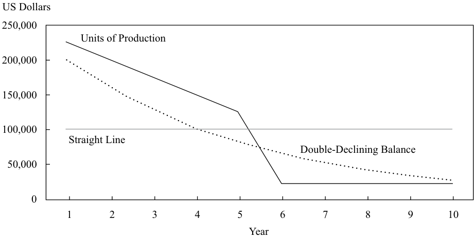
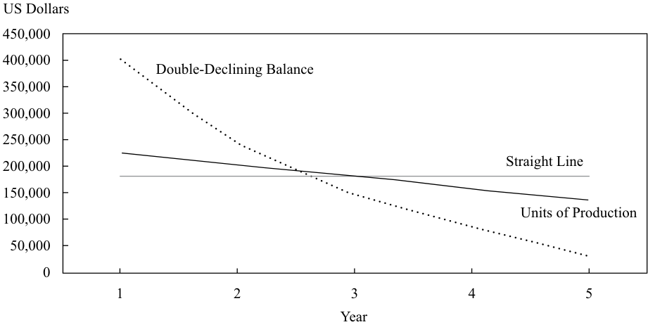

Learning Module 10 Financial Reporting Quality - Part 4: Accounting Choices and Estimates
Volume 4: Financial Statement Analysis
Learning Module 10 Financial Reporting Quality
Part 4/6: Accounting Choices and Estimates (PDF Pages 359–373)
Tập 4: Phân tích Báo cáo Tài chính (Volume 4: Financial Statement Analysis)
Học phần 10: Chất lượng Báo cáo Tài chính (Learning Module 10: Financial Reporting Quality)
Phần 4/6: Các Lựa chọn và Ước tính Kế toán (Accounting Choices and Estimates) (Trang PDF 359–373)
SEC Form 8-K filed 24 April 2014
Mẫu 8-K nộp cho SEC ngày 24 tháng 4 năm 2014 (SEC Form 8-K filed 24 April 2014)
MDC PARTNERS INC. REPORTS RECORD RESULTS FOR THE THREE MONTHS ENDED MARCH 31, 2014
MDC PARTNERS INC. BÁO CÁO KẾT QUẢ KỶ LỤC CHO BA THÁNG KẾT THÚC NGÀY 31 THÁNG 3 NĂM 2014 (MDC PARTNERS INC. REPORTS RECORD RESULTS FOR THE THREE MONTHS ENDED MARCH 31, 2014)
ORGANIC REVENUE GROWTH OF 8.3%, EBITDA GROWTH OF 18.1% AND 90 BASIS POINTS OF MARGIN IMPROVEMENT
TĂNG TRƯỞNG DOANH THU HỮU CƠ ĐẠT 8,3%, TĂNG TRƯỞNG EBITDA ĐẠT 18,1% VÀ BIÊN LỢI NHUẬN CẢI THIỆN 90 ĐIỂM CƠ BẢN (ORGANIC REVENUE GROWTH OF 8.3%, EBITDA GROWTH OF 18.1% AND 90 BASIS POINTS OF MARGIN IMPROVEMENT)
FREE CASH FLOW GROWTH OF 34.0%
TĂNG TRƯỞNG DÒNG TIỀN TỰ DO ĐẠT 34,0% (FREE CASH FLOW GROWTH OF 34.0%)
INCREASED 2014 GUIDANCE IMPLIES YEAR-OVER-YEAR EBITDA GROWTH OF +13.5% TO +16.1%, MARGIN IMPROVEMENT OF 60 TO 70 BASIS POINTS, AND FREE CASH FLOW GROWTH OF +15.8% TO +20.2%
ĐỊNH HƯỚNG NĂM 2014 TĂNG LÊN HÀM Ý TĂNG TRƯỞNG EBITDA SO VỚI CÙNG KỲ NĂM TRƯỚC TỪ +13,5% ĐẾN +16,1%, BIÊN LỢI NHUẬN CẢI THIỆN TỪ 60 ĐẾN 70 ĐIỂM CƠ BẢN, VÀ TĂNG TRƯỞNG DÒNG TIỀN TỰ DO TỪ +15,8% ĐẾN +20,2% (INCREASED 2014 GUIDANCE IMPLIES YEAR-OVER-YEAR EBITDA GROWTH OF +13.5% TO +16.1%, MARGIN IMPROVEMENT OF 60 TO 70 BASIS POINTS, AND FREE CASH FLOW GROWTH OF +15.8% TO +20.2%)
FIRST QUARTER HIGHLIGHTS
ĐIỂM NHẤN QUÝ ĐẦU TIÊN (FIRST QUARTER HIGHLIGHTS)
-
Revenue increased to $292.6 million from $265.6 million, an increase of 10.1%
-
Organic revenue increased 8.3%
-
EBITDA increased to $36.4 million from $30.8 million, an increase of 18.1%
-
EBITDA margin increased 90 basis points to 12.5% from 11.6%
-
Free Cash Flow increased to $20.6 million from $15.4 million, an increase of 34.0%
-
Net New Business wins totaled $24.4 million
-
Doanh thu tăng lên 292,6 triệu USD từ mức 265,6 triệu USD, tăng 10,1%
-
Doanh thu hữu cơ (Organic revenue) tăng 8,3%
-
EBITDA tăng lên 36,4 triệu USD từ mức 30,8 triệu USD, tăng 18,1%
-
Biên EBITDA (EBITDA margin) tăng 90 điểm cơ bản lên 12,5% từ mức 11,6%
-
Dòng tiền Tự do (Free Cash Flow) tăng lên 20,6 triệu USD từ mức 15,4 triệu USD, tăng 34,0%
-
Các hợp đồng Kinh doanh Mới Thuần (Net New Business wins) đạt tổng cộng 24,4 triệu USD
NEW YORK, NY (April 24, 2014) – MDC Partners Inc. (NASDAQ: MDCA; TSX: MDZ.A) today announced financial results for the three months ended March 31, 2014.
NEW YORK, NY (Ngày 24 tháng 4 năm 2014) – MDC Partners Inc. (NASDAQ: MDCA; TSX: MDZ.A) hôm nay đã công bố kết quả tài chính cho ba tháng kết thúc ngày 31 tháng 3 năm 2014.
In general, management may choose to construct non-GAAP financial measures not only to help investors better understand the company’s performance but also to paint a more flattering picture of its performance. In some cases, management may attempt to present non-GAAP measures in a way that diverts attention from the standards-compliant financial information that it is required to present.
Nhìn chung, ban giám đốc có thể chọn xây dựng các thước đo tài chính phi GAAP không chỉ để giúp các nhà đầu tư hiểu rõ hơn về kết quả hoạt động của công ty mà còn để vẽ nên một bức tranh tâng bốc hơn về kết quả hoạt động của mình. Trong một số trường hợp, ban giám đốc có thể cố gắng trình bày các thước đo phi GAAP theo cách làm chệch hướng sự chú ý khỏi thông tin tài chính tuân thủ chuẩn mực mà họ bắt buộc phải trình bày.
ACCOUNTING CHOICES AND ESTIMATES
CÁC LỰA CHỌN VÀ ƯỚC TÍNH KẾ TOÁN (ACCOUNTING CHOICES AND ESTIMATES)
10
10
describe accounting methods (choices and estimates) that could be used to manage earnings, cash flow, and balance sheet items
mô tả các phương pháp kế toán (các lựa chọn và ước tính) có thể được sử dụng để điều chỉnh lợi nhuận, dòng tiền và các khoản mục trên bảng cân đối kế toán
Management’s accounting policies and choices do not necessarily involve complex accounting standards. Something as simple as the shipping terms for goods delivered to customers can have a profound effect on the timing of revenue. On the last day of the first quarter, suppose a company ships USD10,000 of goods to a customer on the terms “free on board (FOB) shipping point,” arriving the next day. This shipping term means that the customer takes title to the goods, and bears the risk of loss, at the time the goods leave the seller’s loading dock. Barring any issues with collectability
Các chính sách và lựa chọn kế toán của ban giám đốc không nhất thiết phải liên quan đến các chuẩn mực kế toán phức tạp. Một điều đơn giản như các điều khoản giao hàng (shipping terms) đối với hàng hóa giao cho khách hàng cũng có thể có tác động sâu sắc đến thời điểm ghi nhận doanh thu. Vào ngày cuối cùng của quý đầu tiên, giả sử một công ty vận chuyển 10.000 USD hàng hóa cho một khách hàng theo điều khoản “giao lên tàu tại điểm đi” (free on board (FOB) shipping point), và hàng đến nơi vào ngày hôm sau. Điều khoản giao hàng này có nghĩa là khách hàng nhận quyền sở hữu đối với hàng hóa, và chịu rủi ro mất mát, tại thời điểm hàng hóa rời khỏi bến bốc hàng của người bán. Trừ khi có bất kỳ vấn đề nào về khả năng thu hồi
of the receivable, or a likelihood of a return, the seller would be able to recognize revenue on the sale along with the associated profit. That revenue and profit would be recognized in the first quarter of the year. If the point at which the goods’ title transfers to the customer is changed to “FOB destination,” then the revenue pattern will be completely different. Under these terms, the title—and risk of loss—transfers to the customer when the goods arrive at their destination, which is the customer’s address. The seller cannot recognize the sale and profit until the shipment arrives the following day, which is the start of a new accounting period.
của khoản phải thu, hoặc khả năng hàng bị trả lại, người bán sẽ có thể ghi nhận doanh thu từ giao dịch bán hàng cùng với khoản lợi nhuận liên quan. Doanh thu và lợi nhuận đó sẽ được ghi nhận trong quý đầu tiên của năm. Nếu thời điểm mà quyền sở hữu hàng hóa chuyển giao cho khách hàng được đổi thành “FOB tại điểm đến” (“FOB destination”), thì mô hình doanh thu sẽ hoàn toàn khác. Theo các điều khoản này, quyền sở hữu—và rủi ro mất mát—chuyển giao cho khách hàng khi hàng hóa đến đích, tức là địa chỉ của khách hàng. Người bán không thể ghi nhận giao dịch bán hàng và lợi nhuận cho đến khi lô hàng đến nơi vào ngày hôm sau, tức là thời điểm bắt đầu một kỳ kế toán mới.
A simple change in shipping terms can make the difference between revenue and profits in the reporting period or postponing them until the next period. Shipping terms can also influence management behavior. To “make the numbers,” managers might push product out the door prematurely under FOB shipping point arrangements to reflect as much revenue as possible in the reporting period. Alternatively, in the case of an over-abundance of orders, the company could run the risk of exceeding analysts’ consensus estimates by a large margin. Management might be uncomfortable with this situation because investors might extrapolate too much from one reporting period in which expectations were exceeded. Management might want to prevent investors from becoming too optimistic and, if possible, delay revenue recognition until the next quarter. This result could be accomplished by fulfilling customer orders by initiating delivery on the last day of the quarter, with shipping terms set as FOB destination. By doing so, title would transfer in the next accounting period. Another possibility in this scenario is that if the customers insisted on FOB shipping point terms, the selling company could simply delay shipment until after the close of the quarter.
Một sự thay đổi đơn giản trong các điều khoản giao hàng có thể tạo ra sự khác biệt giữa việc có doanh thu và lợi nhuận trong kỳ báo cáo hoặc việc trì hoãn chúng sang kỳ tiếp theo. Các điều khoản giao hàng cũng có thể ảnh hưởng đến hành vi của ban giám đốc. Để “làm đẹp các con số” (“make the numbers”), các nhà quản lý có thể đẩy sản phẩm ra khỏi cửa sớm theo các thỏa thuận FOB tại điểm đi nhằm phản ánh càng nhiều doanh thu càng tốt trong kỳ báo cáo. Ngược lại, trong trường hợp có quá nhiều đơn đặt hàng, công ty có thể gặp rủi ro vượt quá mức ước tính đồng thuận của các nhà phân tích với một biên độ lớn. Ban giám đốc có thể không thoải mái với tình huống này bởi vì các nhà đầu tư có thể ngoại suy quá mức từ một kỳ báo cáo mà trong đó kỳ vọng đã bị vượt qua. Ban giám đốc có thể muốn ngăn các nhà đầu tư trở nên quá lạc quan và, nếu có thể, trì hoãn việc ghi nhận doanh thu sang quý tiếp theo. Kết quả này có thể đạt được bằng cách thực hiện các đơn đặt hàng của khách hàng thông qua việc bắt đầu giao hàng vào ngày cuối cùng của quý, với các điều khoản giao hàng được thiết lập là FOB tại điểm đến. Bằng cách làm như vậy, quyền sở hữu sẽ được chuyển giao trong kỳ kế toán tiếp theo. Một khả năng khác trong kịch bản này là nếu khách hàng khăng khăng đòi điều khoản FOB tại điểm đi, công ty bán hàng có thể chỉ cần trì hoãn việc vận chuyển cho đến sau khi kết thúc quý.
This illustration also highlights a difficult distinction for investors to make. A company may use accounting as a tool to aggressively promote earnings growth—as in the example with the premature shipment of goods with FOB shipping point terms—but it may be aggressively managing the business flow by slacking off on shipping goods when business is “too good,” as in the second example. In either case, a desired management outcome is obtained by a simple change in shipping terms. Yet, many investors might be inclined to say that the second example is a conservative kind of earnings management and accept it, even though it artificially masks the actual economic activity that occurred at the time.
Minh họa này cũng làm nổi bật một sự phân biệt khó khăn mà các nhà đầu tư phải thực hiện. Một công ty có thể sử dụng kế toán như một công cụ để thúc đẩy mạnh mẽ tăng trưởng lợi nhuận—như trong ví dụ về việc giao hàng sớm theo điều khoản FOB tại điểm đi—nhưng công ty cũng có thể đang điều chỉnh mạnh mẽ dòng chảy kinh doanh bằng cách chùng xuống trong việc giao hàng khi việc kinh doanh đang “quá tốt,” như trong ví dụ thứ hai. Trong cả hai trường hợp, một kết quả mong muốn của ban giám đốc đều đạt được bằng một sự thay đổi đơn giản trong điều khoản giao hàng. Tuy nhiên, nhiều nhà đầu tư có thể có xu hướng nói rằng ví dụ thứ hai là một kiểu quản trị lợi nhuận thận trọng và chấp nhận nó, mặc dù nó che giấu một cách giả tạo hoạt động kinh tế thực tế đã diễn ra vào thời điểm đó.
How Accounting Choices and Estimates Affect Earnings and Balance Sheets
Cách thức các Lựa chọn và Ước tính Kế toán Ảnh hưởng đến Lợi nhuận và Bảng Cân đối Kế toán (How Accounting Choices and Estimates Affect Earnings and Balance Sheets)
Assumptions about inventory cost flows provide another example of how accounting choices can affect financial reporting. Companies may assume that their purchases of inventory items are sold to customers on a first-in, first-out (FIFO) basis, with the result that the remaining inventory reflects the most recent costs. Alternatively, they may assume that their purchases of inventory items are sold to customers on a weighted-average cost basis. Example 6 makes the point that merely choosing a cost flow assumption can affect profitability.
Các giả định về dòng chi phí hàng tồn kho (inventory cost flows) cung cấp một ví dụ khác về cách các lựa chọn kế toán có thể ảnh hưởng đến báo cáo tài chính. Các công ty có thể giả định rằng các giao dịch mua các mặt hàng tồn kho của họ được bán cho khách hàng trên cơ sở nhập trước, xuất trước (first-in, first-out – FIFO), với kết quả là hàng tồn kho còn lại phản ánh các chi phí gần đây nhất. Ngoài ra, họ có thể giả định rằng các giao dịch mua các mặt hàng tồn kho của họ được bán cho khách hàng trên cơ sở bình quân gia quyền (weighted-average cost). Ví dụ 6 làm rõ quan điểm rằng chỉ riêng việc lựa chọn một giả định dòng chi phí cũng có thể ảnh hưởng đến khả năng sinh lời.
EXAMPLE 6
VÍ DỤ 6 (EXAMPLE 6)
Effect of Cost Flow Assumption
Tác động của Giả định Dòng Chi phí (Effect of Cost Flow Assumption)
A company starts operations with no inventory at the beginning of a fiscal year and makes purchases of a good for resale five times during the period at increasing prices. Each purchase is for the same number of units of the good. The purchases, and the cost of goods available for sale, appear in the following table. Notice that the price per unit has increased by 140 percent by the end of the period.
Một công ty bắt đầu hoạt động mà không có hàng tồn kho vào đầu năm tài chính và thực hiện mua một mặt hàng để bán lại năm lần trong kỳ với mức giá ngày càng tăng. Mỗi lần mua đều có cùng số lượng đơn vị hàng hóa. Các lần mua, cùng với giá vốn hàng sẵn có để bán (cost of goods available for sale), xuất hiện trong bảng sau đây. Lưu ý rằng đơn giá mỗi đơn vị đã tăng 140% vào cuối kỳ.
| Units | Price | Cost | |
|---|---|---|---|
| Purchase 1 | 5 | USD100 | USD500 |
| Purchase 2 | 5 | 150 | 750 |
| Purchase 3 | 5 | 180 | 900 |
| Purchase 4 | 5 | 200 | 1,000 |
| Purchase 5 | 5 | 240 | 1,200 |
| Cost of goods available for sale |
USD4,350 |
| Số đơn vị (Units) | Đơn giá (Price) | Chi phí (Cost) | |
|---|---|---|---|
| Lần mua 1 (Purchase 1) | 5 | USD100 | USD500 |
| Lần mua 2 (Purchase 2) | 5 | 150 | 750 |
| Lần mua 3 (Purchase 3) | 5 | 180 | 900 |
| Lần mua 4 (Purchase 4) | 5 | 200 | 1.000 |
| Lần mua 5 (Purchase 5) | 5 | 240 | 1.200 |
| Giá vốn hàng sẵn có để bán (Cost of goods available for sale) | USD4.350 |
During the period, the company sells, at USD250 each, all of the goods purchased except for five of them. Although the ending inventory consists of five units, the cost attached to those units can vary greatly.
Trong kỳ, công ty bán tất cả số hàng hóa đã mua ngoại trừ năm đơn vị với giá 250 USD mỗi đơn vị. Mặc dù hàng tồn kho cuối kỳ bao gồm năm đơn vị, chi phí gắn liền với những đơn vị đó có thể rất khác nhau.
- What are the ending inventory and cost of goods sold if the company uses the FIFO method of inventory costing?
- Hàng tồn kho cuối kỳ và giá vốn hàng bán là bao nhiêu nếu công ty sử dụng phương pháp tính giá hàng tồn kho FIFO?
Solution :
Lời giải (Solution):
The ending inventory and cost of goods sold if the company uses the FIFO method of inventory costing are USD1,200 and USD3,150.
Hàng tồn kho cuối kỳ và giá vốn hàng bán nếu công ty sử dụng phương pháp tính giá hàng tồn kho FIFO lần lượt là 1.200 USD và 3.150 USD.
- What are the ending inventory and cost of goods sold if the company uses the weighted-average method of inventory costing?
- Hàng tồn kho cuối kỳ và giá vốn hàng bán là bao nhiêu nếu công ty sử dụng phương pháp tính giá hàng tồn kho bình quân gia quyền?
Solution:
Lời giải (Solution):
The ending inventory and cost of goods sold if the company uses the weighted-average method of inventory costing are USD870 and USD3,480.
Hàng tồn kho cuối kỳ và giá vốn hàng bán nếu công ty sử dụng phương pháp tính giá hàng tồn kho bình quân gia quyền lần lượt là 870 USD và 3.480 USD.
- Compare cost of goods sold and gross profit calculated under the two methods.
- Hãy so sánh giá vốn hàng bán và lợi nhuận gộp được tính theo hai phương pháp.
Solution:
Lời giải (Solution):
The following table shows how the choice of inventory costing methods— FIFO versus weighted average—affects the cost of goods sold and gross profit.
Bảng sau đây cho thấy cách thức lựa chọn các phương pháp tính giá hàng tồn kho—FIFO so với bình quân gia quyền—ảnh hưởng đến giá vốn hàng bán và lợi nhuận gộp.
| Cost Flow Assumption | FIFO | Weighted Average |
|---|---|---|
| Cost of goods available for sale | USD4,350 | USD4,350 |
| Ending inventory (5 units) | (1,200) | (870) |
| Cost of goods sold | USD3,150 | USD3,480 |
| Sales | USD5,000 | USD5,000 |
| Cost of goods sold | 3,150 | 3,480 |
| Gross profit | USD1,850 | USD1,520 |
| Grossprofit margin | 37.0% | 30.4% |
| Giả định Dòng Chi phí (Cost Flow Assumption) | FIFO | Bình quân Gia quyền (Weighted Average) |
|---|---|---|
| Giá vốn hàng sẵn có để bán (Cost of goods available for sale) | USD4.350 | USD4.350 |
| Hàng tồn kho cuối kỳ (5 đơn vị) (Ending inventory (5 units)) | (1.200) | (870) |
| Giá vốn hàng bán (Cost of goods sold) | USD3.150 | USD3.480 |
| Doanh thu bán hàng (Sales) | USD5.000 | USD5.000 |
| Giá vốn hàng bán (Cost of goods sold) | 3.150 | 3.480 |
| Lợi nhuận gộp (Gross profit) | USD1.850 | USD1.520 |
| Biên lợi nhuận gộp (Gross profit margin) | 37,0% | 30,4% |
Note: Average inventory cost is calculated as Cost of goods available for sale/Units purchased = $4,350/25 = $174. There are five units in ending inventory, yielding an inventory value of $870.
Lưu ý: Giá vốn hàng tồn kho bình quân được tính bằng Giá vốn hàng sẵn có để bán / Số đơn vị đã mua $= \$4.350 / 25 = \$174$. Có năm đơn vị trong hàng tồn kho cuối kỳ, mang lại giá trị hàng tồn kho là $\$870$.
Depending on which cost flow assumption the company uses, the end-of-period inventory is either USD870 (under the weighted-average method) or USD1,200 (under FIFO). The choice of method results in a difference of USD330 in gross profit and 6.6 percent in gross profit margin.
Tùy thuộc vào giả định dòng chi phí nào mà công ty sử dụng, hàng tồn kho cuối kỳ sẽ là 870 USD (theo phương pháp bình quân gia quyền) hoặc 1.200 USD (theo FIFO). Việc lựa chọn phương pháp dẫn đến khoản chênh lệch 330 USD trong lợi nhuận gộp và 6,6% trong biên lợi nhuận gộp.
The previous example is simplified and extreme for purposes of illustration clarity, but the point is important: Management’s choice among acceptable inventory assumptions and methods affects profit. The selection of an inventory costing method is a policy decision, and companies cannot arbitrarily switch from one method to another. The selection does matter to profitability, however, and it also matters to the balance sheet.
Ví dụ trước đã được đơn giản hóa và đẩy lên mức cực đoan nhằm mục đích làm rõ nội dung minh họa, nhưng quan điểm rút ra là rất quan trọng: Sự lựa chọn của ban giám đốc giữa các giả định và phương pháp hàng tồn kho được chấp nhận có ảnh hưởng đến lợi nhuận. Việc lựa chọn một phương pháp tính giá hàng tồn kho là một quyết định về mặt chính sách, và các công ty không thể tùy tiện chuyển đổi từ phương pháp này sang phương pháp khác. Tuy nhiên, sự lựa chọn đó thực sự có ý nghĩa đối với khả năng sinh lời, và nó cũng có ý nghĩa đối với bảng cân đối kế toán.
In periods of changing prices, the FIFO cost assumption will provide a more current picture of ending inventory value, because the most recent purchases will remain in inventory. The balance sheet will be more relevant to investors. Under the weighted-average cost assumption, however, the balance sheet will display a blend of old and new costs. During inflationary periods, the value of the inventory will be understated: The company will not be able to replenish its inventory at the value shown. At the same time, the weighted-average inventory cost method ensures that the more current costs are shown in cost of sales, making the income statement more relevant than under the FIFO assumption. Trade-offs exist, and investors should be aware of how accounting choices affect financial reports. High-quality financial reporting provides users with sufficient information to assess the effects of accounting choices.
Trong các thời kỳ giá cả thay đổi, giả định chi phí FIFO sẽ cung cấp một bức tranh cập nhật hơn về giá trị hàng tồn kho cuối kỳ, bởi vì các giao dịch mua gần đây nhất sẽ còn lưu lại trong hàng tồn kho. Bảng cân đối kế toán sẽ thích hợp hơn đối với các nhà đầu tư. Tuy nhiên, theo giả định chi phí bình quân gia quyền, bảng cân đối kế toán sẽ hiển thị một sự pha trộn giữa chi phí cũ và chi phí mới. Trong các thời kỳ lạm phát, giá trị của hàng tồn kho sẽ bị phản ánh thấp hơn thực tế (understated): Công ty sẽ không thể bổ sung lại hàng tồn kho của mình ở mức giá trị được hiển thị. Đồng thời, phương pháp tính giá hàng tồn kho bình quân gia quyền đảm bảo rằng các chi phí cập nhật hơn được thể hiện trong giá vốn hàng bán, làm cho báo cáo kết quả hoạt động kinh doanh thích hợp hơn so với theo giả định FIFO. Những sự đánh đổi luôn tồn tại, và các nhà đầu tư cần nhận thức được cách thức các lựa chọn kế toán ảnh hưởng đến các báo cáo tài chính. Báo cáo tài chính chất lượng cao cung cấp cho người sử dụng đầy đủ thông tin để đánh giá tác động của các lựa chọn kế toán.
Estimates abound in financial reporting because of the use of accrual accounting, which attempts to show the effects of all economic events on a company during a particular period. Accrual accounting stands in contrast to cash basis accounting, which shows only the cash transactions conducted by a company. Although a high degree of certainty exists with reporting only cash transactions, much information is hidden. For instance, a company with growing revenues that makes the majority of its sales on credit would be understating its revenues for each period if it reported only cash transactions. On an accrual basis, revenues reflect all transactions that occurred, whether they transacted on a cash basis or credit-extended basis. Estimates enter the process because some facts related to events occurring in a particular period might not yet be known. Estimates can be well grounded in reality and applied to present a complete picture of the events affecting a company, or they can be management tools for achieving a desired financial picture.
Các ước tính có mặt ở khắp mọi nơi trong báo cáo tài chính do việc sử dụng kế toán dồn tích (accrual accounting), vốn cố gắng thể hiện tác động của tất cả các sự kiện kinh tế lên một công ty trong một kỳ cụ thể. Kế toán dồn tích đối lập với kế toán trên cơ sở tiền mặt (cash basis accounting), vốn chỉ thể hiện các giao dịch bằng tiền mặt do một công ty thực hiện. Mặc dù có mức độ chắc chắn cao khi chỉ báo cáo các giao dịch bằng tiền mặt, rất nhiều thông tin lại bị ẩn giấu. Chẳng hạn, một công ty có doanh thu đang tăng trưởng và thực hiện phần lớn doanh số bán hàng theo hình thức bán chịu (on credit) sẽ báo cáo thấp doanh thu của mình cho mỗi kỳ nếu công ty chỉ báo cáo các giao dịch bằng tiền mặt. Trên cơ sở dồn tích, doanh thu phản ánh tất cả các giao dịch đã xảy ra, bất kể chúng được giao dịch trên cơ sở tiền mặt hay cơ sở cấp tín dụng. Các ước tính tham gia vào quy trình này bởi vì một số sự thật liên quan đến các sự kiện xảy ra trong một kỳ cụ thể có thể vẫn chưa được biết rõ. Các ước tính có thể dựa trên cơ sở thực tế vững chắc và được áp dụng để trình bày một bức tranh đầy đủ về các sự kiện ảnh hưởng đến công ty, hoặc chúng có thể là các công cụ của ban giám đốc nhằm đạt được một bức tranh tài chính mong muốn.
To illustrate how estimates can affect financial reporting, consider sales made on credit. A company sells USD1,000,000 of merchandise on credit and records the sale just before year end. Under accrual accounting, that amount is included in revenues and accounts receivable. The company’s managers know from experience that they will never collect every dollar of the accounts receivable. Past experience is that, on average, only 97 percent of accounts receivable is collected. The company would estimate an amount of the uncollectible accounts at the time the sales occur and record an uncollectible accounts expense of USD30,000, lowering earnings. The other side of the entry would be to establish an allowance for uncollectible accounts of USD30,000. This allowance would be a contra asset account, presented as an offset to accounts receivable. The accounts receivable, net of the allowance for uncollectible accounts, would be stated at USD970,000, which is the amount of cash the company ultimately expects to receive. If cash-basis accounting had been used, no revenues or accounts receivable would have been reported even though sales of merchandise had occurred. Accrual accounting, which contains estimates about future events, provides a much fuller picture of what transpired in the period than pure cash-basis accounting.
Để minh họa cách các ước tính có thể ảnh hưởng đến báo cáo tài chính, hãy xem xét các giao dịch bán hàng trả chậm (bán chịu). Một công ty bán chịu 1.000.000 USD hàng hóa và ghi nhận giao dịch bán hàng ngay trước thời điểm cuối năm. Theo kế toán dồn tích, số tiền đó được đưa vào doanh thu và các khoản phải thu khách hàng (accounts receivable). Các nhà quản lý của công ty biết từ kinh nghiệm rằng họ sẽ không bao giờ thu hồi được từng đồng đô la của các khoản phải thu khách hàng đó. Kinh nghiệm trong quá khứ là, trung bình, chỉ có 97% các khoản phải thu khách hàng là thu hồi được. Công ty sẽ ước tính một số tiền của các khoản phải thu không thể thu hồi (uncollectible accounts) tại thời điểm giao dịch bán hàng xảy ra và ghi nhận một khoản chi phí các khoản phải thu khó đòi là 30.000 USD, làm giảm lợi nhuận. Vế bên kia của bút toán sẽ là thiết lập một khoản dự phòng phải thu khó đòi (allowance for uncollectible accounts) trị giá 30.000 USD. Khoản dự phòng này sẽ là một tài khoản điều chỉnh giảm tài sản (contra asset account), được trình bày như một khoản bù trừ với các khoản phải thu khách hàng. Các khoản phải thu khách hàng, sau khi trừ đi dự phòng phải thu khó đòi, sẽ được trình bày ở mức 970.000 USD, tức là số tiền mặt mà công ty cuối cùng kỳ vọng sẽ nhận được. Nếu kế toán trên cơ sở tiền mặt được sử dụng, sẽ không có doanh thu hay khoản phải thu khách hàng nào được báo cáo mặc dù giao dịch bán hàng hóa đã diễn ra. Kế toán dồn tích, chứa đựng các ước tính về các sự kiện tương lai, cung cấp một bức tranh đầy đủ hơn nhiều về những gì đã diễn ra trong kỳ so với kế toán thuần túy trên cơ sở tiền mặt.
Yet, accrual accounting poses temptations to managers to manage the numbers, rather than to manage the business. Suppose a company’s managers realize that the company will not meet analysts’ consensus estimates in a particular quarter, and further, their bonus pay is dependent on reaching specified earnings targets. By offering special payment terms, or discounts, the managers may induce customers to take delivery of products that they normally would not order, so they could ship the products on FOB shipping point terms and recognize the revenues in the current quarter. They could even be so bold as to ship the goods under those terms even if the customer did
Tuy nhiên, kế toán dồn tích lại đặt ra những cám dỗ cho các nhà quản lý trong việc điều chỉnh các con số, thay vì điều hành hoạt động kinh doanh. Giả sử các nhà quản lý của một công ty nhận ra rằng công ty sẽ không đạt được mức ước tính đồng thuận của các nhà phân tích trong một quý cụ thể, và hơn nữa, khoản tiền thưởng của họ lại phụ thuộc vào việc đạt được các mục tiêu lợi nhuận đã định. Bằng cách đưa ra các điều khoản thanh toán đặc biệt, hoặc chiết khấu, các nhà quản lý có thể xúi giục khách hàng nhận giao các sản phẩm mà thông thường họ sẽ không đặt mua, để công ty có thể vận chuyển sản phẩm theo điều khoản FOB tại điểm đi và ghi nhận doanh thu trong quý hiện tại. Họ thậm chí có thể táo bạo đến mức vận chuyển hàng hóa theo các điều khoản đó ngay cả khi khách hàng
not order them, in the hope that the customer would keep them or, at worst, return them in the next accounting period. Their aim would be to move the product off the company’s property with FOB shipping point terms.
không đặt mua chúng, với hy vọng rằng khách hàng sẽ giữ lại chúng hoặc, trong trường hợp tệ nhất, trả lại chúng trong kỳ kế toán tiếp theo. Mục tiêu của họ sẽ là chuyển sản phẩm ra khỏi khuôn viên tài sản của công ty với điều khoản FOB tại điểm đi.
To further improve earnings in order to meet the consensus estimates, the company’s managers might revise their estimate of the uncollectible accounts. The company’s collection history shows a typical non-collection rate of 3 percent of sales, but the managers might rationalize the use of a 2 percent non-collection rate. This change will reduce the allowance for uncollectible accounts and the expense reported for the period. The managers might be able to justify the reduction on the grounds that the sales occurred in a part of the country that was experiencing an improved economic outlook, or that the company’s collection history had been biased by the inclusion of a prolonged period of economic downturn. Whatever the justification, it would be hard to prove that the new estimate was completely right or wrong until time had passed. Because proof of the reliability of estimates is rarely available at the time the estimate is recorded, managers have a readily available means for manipulating earnings at their discretion.
Để cải thiện hơn nữa lợi nhuận nhằm đáp ứng các ước tính đồng thuận, các nhà quản lý của công ty có thể điều chỉnh lại ước tính của họ về các khoản phải thu khó đòi. Lịch sử thu hồi nợ của công ty cho thấy tỷ lệ không thu hồi được điển hình là 3% doanh thu, nhưng các nhà quản lý có thể hợp thức hóa việc sử dụng tỷ lệ không thu hồi được ở mức 2%. Sự thay đổi này sẽ làm giảm khoản dự phòng phải thu khó đòi và chi phí được báo cáo trong kỳ. Các nhà quản lý có thể biện minh cho việc cắt giảm này trên cơ sở rằng các giao dịch bán hàng diễn ra tại một khu vực của đất nước đang có triển vọng kinh tế được cải thiện, hoặc rằng lịch sử thu hồi nợ của công ty đã bị thiên lệch do bao gồm cả một giai đoạn suy thoái kinh tế kéo dài. Dù lời biện minh là gì đi nữa, sẽ rất khó để chứng minh rằng ước tính mới là hoàn toàn đúng hay sai cho đến khi thời gian trôi qua. Bởi vì bằng chứng về độ tin cậy của các ước tính hiếm khi có sẵn tại thời điểm ước tính được ghi nhận, các nhà quản lý có sẵn một phương tiện để thao túng lợi nhuận theo ý muốn của họ.
ConAgra Foods Inc. provides an example of how the allowance for uncollectible accounts may be manipulated to manage earnings.21 A subsidiary, called United Agri-Products (UAP), engaged in several improper accounting practices, one of them being the understatement of uncollectible account expenses for several years. Exhibit 16 presents an excerpt from the SEC’s Accounting and Auditing Enforcement Release.
ConAgra Foods Inc. cung cấp một ví dụ về cách thức khoản dự phòng phải thu khó đòi có thể bị thao túng để quản trị lợi nhuận.21 Một công ty con, có tên là United Agri-Products (UAP), đã tham gia vào một số thông lệ kế toán không đúng đắn, một trong số đó là việc báo cáo thấp chi phí các khoản phải thu khó đòi trong nhiều năm. Bảng minh họa 16 (Exhibit 16) trình bày một đoạn trích từ Thông cáo Thực thi Kế toán và Kiểm toán (Accounting and Auditing Enforcement Release) của SEC.
Exhibit 16: SEC’s Accounting and Auditing Enforcement Release Regarding United Agri-Products
Bảng minh họa 16: Thông cáo Thực thi Kế toán và Kiểm toán của SEC Liên quan đến United Agri-Products (Exhibit 16: SEC’s Accounting and Auditing Enforcement Release Regarding United Agri-Products)
Generally, UAP’s policy required that accounts which were past due between 90 days and one year should be reserved at 50%, and accounts over one year past due were to be reserved at 100%.
Nhìn chung, chính sách của UAP yêu cầu rằng các tài khoản quá hạn từ 90 ngày đến một năm phải được trích lập dự phòng ở mức 50%, và các tài khoản quá hạn trên một năm phải được trích lập dự phòng ở mức 100%.
… In FY 1999 and continuing through FY 2000, UAP had substantial bad debt problems. In FY 2000, certain former UAP senior executives were informed that UAP needed to record an additional $50 million of bad debt expense. Certain former UAP senior executives were aware that in FY 1999 the size of the bad debt at certain IOCs had been substantial enough that it could have negatively impacted those IOC’s ability to achieve PBT (profits before taxes) targets. In addition, just prior to the end of UAP’s FY 2000, the former UAP COO (chief operating officer), in the presence of other UAP employees, ordered that UAP’s bad debt reserve be reduced by $7 million in order to assist the Company in meeting its PBT target for the fiscal year.
… Trong năm tài chính 1999 và tiếp tục kéo dài qua năm tài chính 2000, UAP đã gặp phải các vấn đề nợ xấu đáng kể. Trong năm tài chính 2000, một số cựu giám đốc điều hành cấp cao của UAP đã được thông báo rằng UAP cần phải ghi nhận thêm 50 triệu USD chi phí nợ xấu. Một số cựu giám đốc điều hành cấp cao của UAP đã nhận thức được rằng trong năm tài chính 1999, quy mô nợ xấu tại một số công ty hoạt động độc lập (IOC) đã đủ lớn đến mức có thể tác động tiêu cực đến khả năng đạt được các mục tiêu PBT (lợi nhuận trước thuế) của các IOC đó. Ngoài ra, ngay trước khi kết thúc năm tài chính 2000 của UAP, cựu COO (giám đốc vận hành) của UAP, trước sự chứng kiến của các nhân viên UAP khác, đã ra lệnh cắt giảm quỹ dự phòng nợ xấu của UAP đi 7 triệu USD nhằm hỗ trợ Công ty đạt được mục tiêu PBT cho năm tài chính đó.
… At the end of FY 2000, former UAP senior executives reported financial results to ConAgra which they knew, or were reckless in not knowing, overstated UAP’s income before income taxes because UAP had failed to record sufficient bad debt expense. The misconduct with respect to bad debt expense caused ConAgra to overstate its reported income before income taxes by $7 million, or 1.13%, in FY 2000. At the Agricultural Products’ segment level, the misconduct caused that segment’s reported operating profit to be overstated by 5.05%.
… Vào cuối năm tài chính 2000, các cựu giám đốc điều hành cấp cao của UAP đã báo cáo các kết quả tài chính cho ConAgra mà họ biết, hoặc đã bất cẩn khi không biết, là đã phóng đại thu nhập trước thuế thu nhập của UAP bởi vì UAP đã không ghi nhận đủ chi phí nợ xấu. Hành vi sai trái liên quan đến chi phí nợ xấu đã khiến ConAgra phóng đại thu nhập trước thuế thu nhập được báo cáo của mình thêm 7 triệu USD, tương đương 1,13%, trong năm tài chính 2000. Ở cấp độ bộ phận Sản phẩm Nông nghiệp (Agricultural Products), hành vi sai trái này đã khiến lợi nhuận hoạt động được báo cáo của bộ phận đó bị phóng đại thêm 5,05%.
Deferred-tax assets provide a similar example of choices in estimates affecting the earnings outcome. Deferred-tax assets may arise when a company reports a net operating loss under tax accounting rules. A company may record a deferred-tax asset based on the expectation that losses in the reporting period will offset expected future
Tài sản thuế thu nhập hoãn lại (Deferred-tax assets) cung cấp một ví dụ tương tự về các lựa chọn trong ước tính làm ảnh hưởng đến kết quả lợi nhuận. Tài sản thuế thu nhập hoãn lại có thể phát sinh khi một công ty báo cáo một khoản lỗ hoạt động ròng (net operating loss) theo các quy tắc kế toán thuế. Một công ty có thể ghi nhận một tài sản thuế thu nhập hoãn lại dựa trên kỳ vọng rằng các khoản lỗ trong kỳ báo cáo sẽ bù trừ với lợi nhuận dự kiến trong tương lai
21 Accounting and Auditing Enforcement Release No. 2542, “SEC v. James Charles Blue, Randy Cook, and Victor Campbell,) United States District Court for the District of Colorado, Civ. Action No. 07-CV-00095 REB-MEH (17 January 2007).
21 Accounting and Auditing Enforcement Release No. 2542, “SEC v. James Charles Blue, Randy Cook, and Victor Campbell,” Tòa án Quận Hoa Kỳ tại Quận Colorado (United States District Court for the District of Colorado), Civ. Action No. 07-CV-00095 REB-MEH (17 tháng 1 năm 2007).
profits and reduce the company’s future income tax liability. Accounting standards require that the deferred tax asset be reduced by a “valuation allowance” to account for the possibility that the company will not be able to generate enough profit to use all of the available tax benefits.22
và làm giảm nghĩa vụ thuế thu nhập tương lai của công ty. Các chuẩn mực kế toán yêu cầu tài sản thuế thu nhập hoãn lại phải được ghi giảm thông qua một “khoản dự phòng giảm giá” (“valuation allowance”) để tính đến khả năng công ty sẽ không thể tạo ra đủ lợi nhuận nhằm sử dụng hết tất cả các lợi ích thuế hiện có.22
Assume a company loses EUR1 billion in 2012, generating a net operating loss of the same amount for tax purposes. The company’s income tax rate is 25 percent, and it will be able to apply the net operating loss to its taxable income for the next 10 years. The net operating loss results in a deferred tax asset with a nominal value of EUR250 million (25% × EUR1,000,000,000). Initial recognition would result in a deferred tax asset of EUR250 million and a credit to deferred tax expense of EUR250 million. The company must address the question of whether or not the EUR250 million will ever be completely applied to future income. It may be experiencing increased competition and other circumstances that resulted in the EUR1 billion loss, and it may be unreasonable to assume it will have taxable income against which to apply the loss. In fact, the company’s managers might believe it is reasonable to assume only that it will survive for five years, and with marginal profitability. The EUR250 million deferred tax asset is thus overstated if no valuation allowance is recorded to offset it.
Giả sử một công ty lỗ 1 tỷ EUR vào năm 2012, tạo ra một khoản lỗ hoạt động ròng có cùng số tiền cho mục đích tính thuế. Thuế suất thuế thu nhập của công ty là 25%, và công ty sẽ có thể áp dụng khoản lỗ hoạt động ròng này vào thu nhập chịu thuế của mình trong 10 năm tiếp theo. Khoản lỗ hoạt động ròng dẫn đến một tài sản thuế thu nhập hoãn lại có giá trị danh nghĩa là 250 triệu EUR ($25\% \times 1.000.000.000\text{ EUR}$). Việc ghi nhận ban đầu sẽ dẫn đến một tài sản thuế thu nhập hoãn lại là 250 triệu EUR và một khoản ghi có (credit – làm giảm) vào chi phí thuế thu nhập hoãn lại là 250 triệu EUR. Công ty phải giải quyết câu hỏi liệu 250 triệu EUR này có bao giờ được áp dụng toàn bộ vào thu nhập tương lai hay không. Công ty có thể đang phải đối mặt với sự cạnh tranh ngày càng tăng và các hoàn cảnh khác đã dẫn đến khoản lỗ 1 tỷ EUR đó, và có thể sẽ là không hợp lý nếu giả định rằng công ty sẽ có thu nhập chịu thuế để áp dụng khoản lỗ này vào. Trên thực tế, các nhà quản lý của công ty có thể tin rằng chỉ hợp lý khi giả định công ty sẽ tồn tại được trong năm năm, và với khả năng sinh lời cận biên (marginal profitability). Do đó, tài sản thuế thu nhập hoãn lại 250 triệu EUR sẽ bị phóng đại nếu không có khoản dự phòng giảm giá nào được ghi nhận để bù trừ với nó.
The managers believe that only EUR100 million of the net operating losses actually will be applied to the company’s taxable income. That belief implies that only EUR25 million of the tax benefits will ever be realized. The deferred tax assets reported on the balance sheet should not exceed this amount. The company should record a valuation allowance of EUR225 million, which would offset the deferred tax asset balance of EUR250 million, resulting in a net deferred tax asset balance of EUR25 million. There also would be a EUR225 million credit to the deferred tax provision. It is important to understand that the valuation allowance should be revised whenever facts and circumstances change.
Các nhà quản lý tin rằng chỉ có 100 triệu EUR trong số các khoản lỗ hoạt động ròng thực sự sẽ được áp dụng vào thu nhập chịu thuế của công ty. Niềm tin đó hàm ý rằng chỉ có 25 triệu EUR lợi ích thuế sẽ thực sự được hiện thực hóa. Tài sản thuế thu nhập hoãn lại được báo cáo trên bảng cân đối kế toán không được vượt quá số tiền này. Công ty nên ghi nhận một khoản dự phòng giảm giá trị giá 225 triệu EUR, khoản này sẽ bù trừ với số dư tài sản thuế thu nhập hoãn lại 250 triệu EUR, dẫn đến số dư tài sản thuế thu nhập hoãn lại ròng là 25 triệu EUR. Đồng thời cũng sẽ có một khoản ghi nhận 225 triệu EUR vào dự phòng chi phí thuế thu nhập hoãn lại. Điều quan trọng cần hiểu là khoản dự phòng giảm giá cần phải được điều chỉnh lại bất cứ khi nào các sự kiện và hoàn cảnh thay đổi.
The ultimate value of the deferred tax asset is driven by management’s outlook for the future—and that outlook may be influenced by other factors. If the company needs to stay in compliance with debt covenants and needs every euro of value that can be justified by the outlook, its managers may take a more optimistic view of the future and keep the valuation allowance artificially low (in other words, the net deferred tax asset high).
Giá trị cuối cùng của tài sản thuế thu nhập hoãn lại được thúc đẩy bởi triển vọng của ban giám đốc về tương lai—và triển vọng đó có thể bị ảnh hưởng bởi các yếu tố khác. Nếu công ty cần duy trì sự tuân thủ với các giao ước nợ và cần từng đồng euro giá trị có thể được biện minh bởi triển vọng đó, các nhà quản lý của công ty có thể có cái nhìn lạc quan hơn về tương lai và giữ cho khoản dự phòng giảm giá ở mức thấp một cách giả tạo (nói cách khác, giữ cho tài sản thuế thu nhập hoãn lại ròng ở mức cao).
PowerLinx Inc. provides an example of how over-optimism about the realizability of a deferred tax asset can lead to misstated financial reports. PowerLinx was a maker of security video cameras, underwater cameras, and accessories. Aside from fraudulently reporting 90 percent of its fiscal year 2000 revenue, PowerLinx had problems with valuation of its deferred tax assets. Exhibit 17 provides an excerpt from the SEC’s Accounting and Auditing Enforcement Release with emphasis added.23
PowerLinx Inc. cung cấp một ví dụ về cách thức sự lạc quan quá mức về khả năng thu hồi của một tài sản thuế thu nhập hoãn lại có thể dẫn đến các báo cáo tài chính bị trình bày sai lệch. PowerLinx là một nhà sản xuất máy quay video an ninh, máy ảnh dưới nước và phụ kiện. Bên cạnh việc báo cáo gian lận 90% doanh thu năm tài chính 2000 của mình, PowerLinx còn gặp vấn đề với việc định giá tài sản thuế thu nhập hoãn lại. Bảng minh họa 17 (Exhibit 17) cung cấp một đoạn trích từ Thông cáo Thực thi Kế toán và Kiểm toán của SEC với phần nhấn mạnh được thêm vào.23
Exhibit 17: SEC’s Accounting and Auditing Enforcement Release Regarding PowerLinx
Bảng minh họa 17: Thông cáo Thực thi Kế toán và Kiểm toán của SEC Liên quan đến PowerLinx (Exhibit 17: SEC’s Accounting and Auditing Enforcement Release Regarding PowerLinx)
PowerLinx improperly recorded on its fiscal year 2000 balance sheet a deferred tax asset of $1,439,322 without any valuation allowance. The tax asset was material, representing almost forty percent of PowerLinx’s total assets of $3,841,944. PowerLinx also recorded deferred tax assets of $180,613, $72,907, and $44,921, respectively, in its financial statements for the first three quarters of 2000.
PowerLinx đã ghi nhận không đúng đắn trên bảng cân đối kế toán năm tài chính 2000 của mình một tài sản thuế thu nhập hoãn lại trị giá 1.439.322 USD mà không có bất kỳ khoản dự phòng giảm giá nào. Tài sản thuế này là trọng yếu, chiếm gần bốn mươi phần trăm trong tổng tài sản 3.841.944 USD của PowerLinx. PowerLinx cũng đã ghi nhận các tài sản thuế thu nhập hoãn lại lần lượt là 180.613 USD, 72.907 USD và 44.921 USD trong các báo cáo tài chính cho ba quý đầu năm 2000.
22 See Accounting Standards Codification (ASC) 740-10-30-16 to 25, Establishment of a Valuation Allowance for Deferred Tax Assets .
22 Xem Hệ thống hóa Chuẩn mực Kế toán (Accounting Standards Codification – ASC) 740-10-30-16 đến 25, Thiết lập Dự phòng Giảm giá cho Tài sản Thuế Thu nhập Hoãn lại (Establishment of a Valuation Allowance for Deferred Tax Assets).
23 Accounting and Auditing Enforcement Release No. 2448, “In the Matter of Douglas R. Bauer, Respondent,” SEC (27 June 2006), www .sec .gov/ litigation/ admin/ 2006/ 34 -54049 .pdf.
23 Accounting and Auditing Enforcement Release No. 2448, “In the Matter of Douglas R. Bauer, Respondent,” SEC (27 tháng 6 năm 2006), www.sec.gov/litigation/admin/2006/34-54049.pdf.
PowerLinx did not have a proper basis for recording the deferred tax assets. The company had accumulated significant losses in 2000 and had no historical operating basis from which to conclude that it would be profitable in future years. Underwater camera sales had declined significantly and the company had devoted most of its resources to developing its SecureView product. The sole basis for PowerLinx’s “expectation” of future profitability was the purported $9 million backlog of SecureView orders, which management assumed would generate taxable income; however, this purported backlog, which predated Bauer’s hiring, did not reflect actual demand for SecureView cameras and, consequently, was not a reasonable or reliable indicator of future profitability.
PowerLinx không có cơ sở thích hợp để ghi nhận các tài sản thuế thu nhập hoãn lại này. Công ty đã tích lũy các khoản lỗ đáng kể trong năm 2000 và không có cơ sở hoạt động lịch sử nào để từ đó kết luận rằng công ty sẽ có lãi trong những năm tương lai. Doanh số bán máy ảnh dưới nước đã sụt giảm đáng kể và công ty đã dành phần lớn nguồn lực của mình để phát triển sản phẩm SecureView. Cơ sở duy nhất cho “kỳ vọng” về khả năng sinh lời trong tương lai của PowerLinx là lượng đơn hàng tồn đọng (backlog) được cho là trị giá 9 triệu USD của SecureView, mà ban giám đốc giả định sẽ tạo ra thu nhập chịu thuế; tuy nhiên, lượng đơn hàng tồn đọng được cho là này, vốn có từ trước khi tuyển dụng Bauer, không phản ánh nhu cầu thực tế đối với máy quay SecureView và, do đó, không phải là một chỉ báo hợp lý hoặc đáng tin cậy về khả năng sinh lời trong tương lai.
Another example of misstated financial results caused by improper reflection of the realizability of a deferred tax asset occurred with Hampton Roads Bankshares Inc. (HRBS), a commercial bank with deteriorating loan portfolio quality and commensurate losses in the years following the financial crisis. The company reported a deferred tax asset related to its loan losses; however, it did not establish a valuation allowance against its deferred tax asset. This decision was based on dubious projections indicating that the company would earn the necessary future taxable income “to fully utilize the [deferred tax asset] DTA over the applicable carry-forward period.”24 Over time, it became clear that the earnings projections were not realistic, and ultimately the company restated its financial results to include a valuation allowance against almost the entire deferred tax asset. Exhibit 18 presents an excerpt from the company’s amended Form 10-Q/A containing the restatement.
Một ví dụ khác về kết quả tài chính bị trình bày sai lệch do phản ánh không đúng đắn khả năng thu hồi của một tài sản thuế thu nhập hoãn lại đã xảy ra với Hampton Roads Bankshares Inc. (HRBS), một ngân hàng thương mại có chất lượng danh mục cho vay đang suy giảm và các khoản lỗ tương ứng trong những năm sau cuộc khủng hoảng tài chính. Công ty đã báo cáo một tài sản thuế thu nhập hoãn lại liên quan đến các khoản lỗ cho vay của mình; tuy nhiên, công ty đã không thiết lập một khoản dự phòng giảm giá đối với tài sản thuế thu nhập hoãn lại đó. Quyết định này dựa trên các dự phóng đáng ngờ chỉ ra rằng công ty sẽ kiếm được khoản thu nhập chịu thuế tương lai cần thiết “để sử dụng toàn bộ [tài sản thuế thu nhập hoãn lại] DTA trong suốt thời kỳ chuyển lỗ được áp dụng.”24 Theo thời gian, ngày càng rõ ràng rằng các dự phóng lợi nhuận là không thực tế, và cuối cùng công ty đã phải trình bày lại (restated) kết quả tài chính của mình để đưa vào một khoản dự phòng giảm giá đối với gần như toàn bộ tài sản thuế thu nhập hoãn lại. Bảng minh họa 18 (Exhibit 18) trình bày một đoạn trích từ Mẫu 10-Q/A sửa đổi của công ty có chứa phần trình bày lại này.
Exhibit 18: Excerpt from Hampton Roads Bankshares, Inc. Form 10-Q/A filed August 13, 2010
Bảng minh họa 18: Đoạn trích từ Mẫu 10-Q/A của Hampton Roads Bankshares, Inc. nộp ngày 13 tháng 8 năm 2010 (Exhibit 18: Excerpt from Hampton Roads Bankshares, Inc. Form 10-Q/A filed August 13, 2010)
NOTE B – RESTATEMENT OF CONSOLIDATED FINANCIAL STATEMENTS
THUYẾT MINH B – TRÌNH BÀY LẠI CÁC BÁO CÁO TÀI CHÍNH HỢP NHẤT (NOTE B – RESTATEMENT OF CONSOLIDATED FINANCIAL STATEMENTS)
Subsequent to filing the Company’s annual report on Form 10-K for the year ended December 31, 2009 and its Form 10-Q for the three months ended March 31, 2010 the Company determined that a valuation allowance on its deferred tax assets should be recognized as of December 31, 2009. The Company decided to establish a valuation allowance against the deferred tax asset because it is uncertain when it will realize this asset.
Sau khi nộp báo cáo thường niên của Công ty theo Mẫu 10-K cho năm kết thúc ngày 31 tháng 12 năm 2009 và Mẫu 10-Q cho ba tháng kết thúc ngày 31 tháng 3 năm 2010, Công ty đã xác định rằng một khoản dự phòng giảm giá đối với các tài sản thuế thu nhập hoãn lại của mình cần phải được ghi nhận tại ngày 31 tháng 12 năm 2009. Công ty đã quyết định thiết lập một khoản dự phòng giảm giá đối với tài sản thuế thu nhập hoãn lại bởi vì không chắc chắn khi nào công ty sẽ hiện thực hóa được tài sản này.
Accordingly, the December 31, 2009 consolidated balance sheet and the March 31, 2010 consolidated financial statements have been restated to account for this determination. The effect of this change in the consolidated financial statements was as follows (in thousands, except per share amounts).
Theo đó, bảng cân đối kế toán hợp nhất ngày 31 tháng 12 năm 2009 và các báo cáo tài chính hợp nhất ngày 31 tháng 3 năm 2010 đã được trình bày lại để hạch toán cho quyết định này. Tác động của sự thay đổi này trong các báo cáo tài chính hợp nhất như sau (đơn vị: nghìn, ngoại trừ số tiền trên mỗi cổ phiếu).
Consolidated Balance Sheet at 31 March 2010
Bảng Cân đối Kế toán Hợp nhất tại ngày 31 tháng 3 năm 2010 (Consolidated Balance Sheet at 31 March 2010)
| As Reported | Adjustment | As Restated | |
|---|---|---|---|
| Deferred tax assets, net | USD70,323 | USD(70,323) | — |
| Total assets | 3,016,470 | (70,323) | USD2,946,147 |
| Retained earnings deficit | (158,621) | (70,323) | (228,944) |
| Total shareholder’s equity | 156,509 | (70,323) | 86,186 |
| Total liabilities and shareholders’ equity |
3,016,470 | (70,323) | 2,946,147 |
| Theo Báo cáo (As Reported) | Điều chỉnh (Adjustment) | Theo Trình bày lại (As Restated) | |
|---|---|---|---|
| Tài sản thuế thu nhập hoãn lại, ròng (Deferred tax assets, net) | USD70.323 | USD(70.323) | — |
| Tổng tài sản (Total assets) | 3.016.470 | (70.323) | USD2.946.147 |
| Thâm hụt lợi nhuận giữ lại (Retained earnings deficit) | (158.621) | (70.323) | (228.944) |
| Tổng vốn chủ sở hữu của cổ đông (Total shareholder’s equity) | 156.509 | (70.323) | 86.186 |
| Tổng nợ phải trả và vốn chủ sở hữu của cổ đông (Total liabilities and shareholders’ equity) | 3.016.470 | (70.323) | 2.946.147 |
Consolidated Balance Sheet at 31 December 2009
Bảng Cân đối Kế toán Hợp nhất tại ngày 31 tháng 12 năm 2009 (Consolidated Balance Sheet at 31 December 2009)
| As Reported | Adjustment | As Restated | |
|---|---|---|---|
| Deferred tax assets, net | USD56,380 | USD(55,983) | USD397 |
| Total assets | 2,975,559 | (55,983) | 2,919,576 |
| Retained earnings deficit | (132,465) | (55,983) | (188,488) |
| Total shareholder’s equity | 180,996 | (55,983) | 125,013 |
| Total liabilities and shareholders’ equity |
2,975,559 | (55,983) | 2,919,576 |
| Theo Báo cáo (As Reported) | Điều chỉnh (Adjustment) | Theo Trình bày lại (As Restated) | |
|---|---|---|---|
| Tài sản thuế thu nhập hoãn lại, ròng (Deferred tax assets, net) | USD56.380 | USD(55.983) | USD397 |
| Tổng tài sản (Total assets) | 2.975.559 | (55.983) | 2.919.576 |
| Thâm hụt lợi nhuận giữ lại (Retained earnings deficit) | (132.465) | (55.983) | (188.488) |
| Tổng vốn chủ sở hữu của cổ đông (Total shareholder’s equity) | 180.996 | (55.983) | 125.013 |
| Tổng nợ phải trả và vốn chủ sở hữu của cổ đông (Total liabilities and shareholders’ equity) | 2.975.559 | (55.983) | 2.919.576 |
Another example of how choices and estimates can affect reported results lies in the selection of a depreciation method for allocating the cost of long-lived assets to accounting periods subsequent to their acquisition. A company’s managers may choose to depreciate long-lived assets (1) on a straight-line basis, with each year bearing the same amount of depreciation expense; (2) using an accelerated method, with greater depreciation expense recognition in the earlier part of an asset’s life; or (3) using an activity-based depreciation method, which allocates depreciation expense based on units of use or production. Depreciation expense is affected by another set of choices and estimates regarding the salvage value of the assets being depreciated. A salvage value of zero will always increase depreciation expense under any method compared with the choice of a non-zero salvage value.
Một ví dụ khác về cách các lựa chọn và ước tính có thể ảnh hưởng đến kết quả được báo cáo nằm ở việc lựa chọn phương pháp khấu hao (depreciation method) để phân bổ nguyên giá của tài sản dài hạn vào các kỳ kế toán sau khi mua chúng. Các nhà quản lý của một công ty có thể chọn khấu hao tài sản dài hạn (1) trên cơ sở đường thẳng (straight-line basis), với mỗi năm chịu cùng một mức chi phí khấu hao; (2) sử dụng phương pháp khấu hao nhanh (accelerated method), với việc ghi nhận chi phí khấu hao lớn hơn trong giai đoạn đầu của vòng đời tài sản; hoặc (3) sử dụng phương pháp khấu hao theo mức độ hoạt động (activity-based depreciation method), phân bổ chi phí khấu hao dựa trên số đơn vị sử dụng hoặc sản xuất (units of use or production). Chi phí khấu hao còn bị ảnh hưởng bởi một tập hợp các lựa chọn và ước tính khác liên quan đến giá trị thanh lý (salvage value) của các tài sản đang được khấu hao. Giá trị thanh lý bằng không sẽ luôn làm tăng chi phí khấu hao theo bất kỳ phương pháp nào so với việc lựa chọn một giá trị thanh lý khác không.
Assume a company invests USD1,000,000 in manufacturing equipment and expects it to have a useful economic life of 10 years. During its expected life, the equipment will produce 400,000 units of product, or USD2.50 depreciation expense per unit produced. When it is disposed of at the end of its expected life, the company’s managers expect to realize no value for the equipment. Exhibit 19 shows the differences in the three alternative methods of depreciation: straight-line, accelerated on a double-declining balance basis, and units-of-production method, with no salvage value assumed at the end of the equipment’s life.
Giả sử một công ty đầu tư 1.000.000 USD vào thiết bị sản xuất và kỳ vọng thiết bị này có thời gian sử dụng kinh tế hữu ích là 10 năm. Trong suốt thời gian sử dụng dự kiến của mình, thiết bị sẽ sản xuất ra 400.000 đơn vị sản phẩm, tương đương 2,50 USD chi phí khấu hao trên mỗi đơn vị được sản xuất. Khi được thanh lý vào cuối thời gian sử dụng dự kiến, các nhà quản lý của công ty kỳ vọng sẽ không thu hồi được giá trị nào từ thiết bị này. Bảng minh họa 19 (Exhibit 19) cho thấy sự khác biệt trong ba phương pháp khấu hao thay thế: phương pháp đường thẳng, phương pháp khấu hao nhanh trên cơ sở số dư giảm dần kép (double-declining balance), và phương pháp số lượng sản phẩm (units-of-production), với giả định không có giá trị thanh lý vào cuối vòng đời của thiết bị.
Exhibit 19: Alternative Methods of Depreciation
Bảng minh họa 19: Các Phương pháp Khấu hao Thay thế (Exhibit 19: Alternative Methods of Depreciation)
| Straight-Line Method |
Double-De | clining Balance | Method | Unit | s-of-Productio | n Method | |
|---|---|---|---|---|---|---|---|
| Year | Depreciation Expense |
Balance | Declining Balance Rate |
Depreciation Expense |
Units Produced |
Depreciation Rate/Unit |
Depreciation Expense |
| 1 | USD100,000 | USD1,000,000 | 20% | USD200,000 | 90,000 | USD2.50 | USD225,000 |
| 2 | 100,000 | 800,000 | 20% | 160,000 | 80,000 | USD2.50 | 200,000 |
| 3 | 100,000 | 640,000 | 20% | 128,000 | 70,000 | USD2.50 | 175,000 |
| 4 | 100,000 | 512,000 | 20% | 102,400 | 60,000 | USD2.50 | 150,000 |
| 5 | 100,000 | 409,600 | 20% | 81,920 | 50,000 | USD2.50 | 125,000 |
| 6 | 100,000 | 327,680 | 20% | 65,536 | 10,000 | USD2.50 | 25,000 |
| 7 | 100,000 | 262,144 | 20% | 52,429 | 10,000 | USD2.50 | 25,000 |
| 8 | 100,000 | 209,715 | 20% | 41,943 | 10,000 | USD2.50 | 25,000 |
| 9 | 100,000 | 167,772 | 20% | 33,554 | 10,000 | USD2.50 | 25,000 |
| 10 | 100,000 | 134,218 | 20% | 26,844 | 10,000 | USD2.50 | 25,000 |
| Total | USD1,000,000 | USD892,626 | 400,000 | USD1,000,000 |
| Phương pháp Đường thẳng (Straight-Line Method) | Phương pháp Số dư Giảm dần Kép (Double-Declining Balance Method) | Phương pháp Số lượng Sản phẩm (Units-of-Production Method) | |||||
|---|---|---|---|---|---|---|---|
| Năm (Year) | Chi phí Khấu hao (Depreciation Expense) | Số dư (Balance) | Tỷ lệ Số dư Giảm dần (Declining Balance Rate) | Chi phí Khấu hao (Depreciation Expense) | Số đơn vị Sản xuất (Units Produced) | Mức Khấu hao/Đơn vị (Depreciation Rate/Unit) | Chi phí Khấu hao (Depreciation Expense) |
| 1 | USD100.000 | USD1.000.000 | 20% | USD200.000 | 90.000 | USD2,50 | USD225.000 |
| 2 | 100.000 | 800.000 | 20% | 160.000 | 80.000 | USD2,50 | 200.000 |
| 3 | 100.000 | 640.000 | 20% | 128.000 | 70.000 | USD2,50 | 175.000 |
| 4 | 100.000 | 512.000 | 20% | 102.400 | 60.000 | USD2,50 | 150.000 |
| 5 | 100.000 | 409.600 | 20% | 81.920 | 50.000 | USD2,50 | 125.000 |
| 6 | 100.000 | 327.680 | 20% | 65.536 | 10.000 | USD2,50 | 25.000 |
| 7 | 100.000 | 262.144 | 20% | 52.429 | 10.000 | USD2,50 | 25.000 |
| 8 | 100.000 | 209.715 | 20% | 41.943 | 10.000 | USD2,50 | 25.000 |
| 9 | 100.000 | 167.772 | 20% | 33.554 | 10.000 | USD2,50 | 25.000 |
| 10 | 100.000 | 134.218 | 20% | 26.844 | 10.000 | USD2,50 | 25.000 |
| Tổng cộng (Total) | USD1.000.000 | USD892.626 | 400.000 | USD1.000.000 |
The straight-line method allocates the cost of the equipment evenly to all 10 years of the equipment’s life. The double-declining balance method will have a higher allocation of cost to the earlier years of the equipment’s life. As its name implies, the depreciation expense will decline in each succeeding year because it is based on a fixed rate applied to a declining balance. The rate used was double the straight-line rate, but it could have been any other rate that the company’s managers believed was representative of the way the actual equipment depreciation occurred. Notice that the double-declining balance method also results in an incomplete depreciation of the machine at the end of 10 years; a balance of USD107,374 (= USD1,000,000 − USD892,626) remains at the end of the expected life, which will result in a loss upon the retirement of the equipment if the company’s expectation of zero salvage value turns out to be correct. Some companies may choose to depreciate the equipment to its expected salvage value, zero in this case, in its final year of use. Some companies may use a policy of switching to straight-line depreciation after the midlife of its depreciable assets in order to fully depreciate them. That particular pattern is coincidentally displayed in the units-of-production example, in which the equipment is used most heavily in the earliest part of its useful life, and then levels off to much less utilization in the second half of the expected life.
Phương pháp đường thẳng phân bổ nguyên giá của thiết bị đồng đều cho tất cả 10 năm trong vòng đời của thiết bị. Phương pháp số dư giảm dần kép sẽ có mức phân bổ chi phí cao hơn vào những năm đầu trong vòng đời của thiết bị. Đúng như tên gọi của nó, chi phí khấu hao sẽ giảm dần trong mỗi năm tiếp theo bởi vì nó dựa trên một tỷ lệ cố định được áp dụng cho một số dư giảm dần. Tỷ lệ được sử dụng gấp đôi tỷ lệ đường thẳng, nhưng nó cũng có thể là bất kỳ tỷ lệ nào khác mà các nhà quản lý của công ty tin rằng đại diện cho cách thức khấu hao thiết bị thực tế diễn ra. Lưu ý rằng phương pháp số dư giảm dần kép cũng dẫn đến việc khấu hao không hết hoàn toàn cỗ máy vào cuối 10 năm; một số dư trị giá 107.374 USD ($= \text{USD } 1.000.000 - \text{USD } 892.626$) vẫn còn lại vào cuối thời gian sử dụng dự kiến, điều này sẽ dẫn đến một khoản lỗ khi thanh lý/loại bỏ thiết bị nếu kỳ vọng của công ty về giá trị thanh lý bằng không hóa ra là chính xác. Một số công ty có thể chọn khấu hao thiết bị về mức giá trị thanh lý dự kiến của nó, bằng không trong trường hợp này, vào năm sử dụng cuối cùng. Một số công ty có thể sử dụng chính sách chuyển sang khấu hao đường thẳng sau nửa chặng đường vòng đời của các tài sản khấu hao nhằm khấu hao hết hoàn toàn chúng. Mô hình cụ thể đó tình cờ được thể hiện trong ví dụ về phương pháp số lượng sản phẩm, trong đó thiết bị được sử dụng nhiều nhất trong phần đầu của thời gian sử dụng hữu ích, và sau đó chững lại ở mức sử dụng ít hơn nhiều trong nửa sau của thời gian sử dụng dự kiến.
Exhibit 20 shows the different expense allocation patterns of the methods over the same life. Each will affect earnings differently.
Bảng minh họa 20 (Exhibit 20) cho thấy các mô hình phân bổ chi phí khác nhau của các phương pháp trong cùng một thời gian sử dụng. Mỗi phương pháp sẽ ảnh hưởng đến lợi nhuận theo cách khác nhau.
Exhibit 20: Expense Allocation Patterns of Different Depreciation Methods
Bảng minh họa 20: Các Mô hình Phân bổ Chi phí của các Phương pháp Khấu hao Khác nhau (Exhibit 20: Expense Allocation Patterns of Different Depreciation Methods)

Chú thích hình ảnh: - Trục tung: Đô la Mỹ (US Dollars) từ
0đến250.000- Trục hoành: Năm (Year) từ1đến10- Các đường biểu diễn: - Số lượng sản phẩm (Units of Production) - Đường thẳng (Straight Line) - Số dư giảm dần kép (Double-Declining Balance)
The company’s managers could justify any of these methods. Each might fairly represent the way the equipment will be consumed over its expected economic life, which is a subjective estimate. The choices of methods and lives can profoundly affect reported income. These choices are not proven right or wrong until far into the future—but managers must estimate their effects in the present.
Các nhà quản lý của công ty có thể biện minh cho bất kỳ phương pháp nào trong số này. Mỗi phương pháp đều có thể trình bày hợp lý cách thức thiết bị sẽ được tiêu dùng trong suốt thời gian sử dụng kinh tế dự kiến của nó, vốn là một ước tính chủ quan. Việc lựa chọn các phương pháp và thời gian sử dụng có thể ảnh hưởng sâu sắc đến thu nhập được báo cáo. Những lựa chọn này không được chứng minh là đúng hay sai cho đến tận tương lai xa—nhưng các nhà quản lý phải ước tính tác động của chúng ngay ở hiện tại.
Exhibit 21 shows the effects of the three different methods on operating profit and operating profit margins, assuming that the production output of the equipment generates revenues of USD500,000 each year and USD200,000 of cash operating expenses are incurred, leaving USD300,000 of operating profit before depreciation expense.
Bảng minh họa 21 (Exhibit 21) cho thấy tác động của ba phương pháp khác nhau lên lợi nhuận hoạt động và biên lợi nhuận hoạt động, giả định rằng sản lượng đầu ra của thiết bị tạo ra doanh thu 500.000 USD mỗi năm và phát sinh 200.000 USD chi phí hoạt động bằng tiền mặt, để lại 300.000 USD lợi nhuận hoạt động trước chi phí khấu hao.
Exhibit 21: Effects of Depreciation Methods on Operating Profit
Bảng minh họa 21: Tác động của các Phương pháp Khấu hao lên Lợi nhuận Hoạt động (Exhibit 21: Effects of Depreciation Methods on Operating Profit)
| Straight Line i |
i | ||
|---|---|---|---|
| Year | Depreciation | Operating Profit | Operating Profit Margin |
| 1 | USD100,000 | USD200,000 | 40.0% |
| 2 | 100,000 | 200,000 | 40.0% |
| 3 | 100,000 | 200,000 | 40.0% |
| 4 | 100,000 | 200,000 | 40.0% |
| 5 | 100,000 | 200,000 | 40.0% |
| 6 | 100,000 | 200,000 | 40.0% |
| 7 | 100,000 | 200,000 | 40.0% |
| 8 | 100,000 | 200,000 | 40.0% |
| 9 | 100,000 | 200,000 | 40.0% |
| 10 | 100,000 | 200,000 | 40.0% |
| Đường thẳng (Straight Line) | |||
|---|---|---|---|
| Năm (Year) | Khấu hao (Depreciation) | Lợi nhuận Hoạt động (Operating Profit) | Biên Lợi nhuận Hoạt động (Operating Profit Margin) |
| 1 | USD100.000 | USD200.000 | 40,0% |
| 2 | 100.000 | 200.000 | 40,0% |
| 3 | 100.000 | 200.000 | 40,0% |
| 4 | 100.000 | 200.000 | 40,0% |
| 5 | 100.000 | 200.000 | 40,0% |
| 6 | 100.000 | 200.000 | 40,0% |
| 7 | 100.000 | 200.000 | 40,0% |
| 8 | 100.000 | 200.000 | 40,0% |
| 9 | 100.000 | 200.000 | 40,0% |
| 10 | 100.000 | 200.000 | 40,0% |
| Double-Declining Bala i |
nce i |
||
|---|---|---|---|
| Year | Depreciation | Operating Profit | Operating Profit Margin |
| 1 | USD200,000 | USD100,000 | 20.0% |
| 2 | 160,000 | 140,000 | 28.0% |
| 3 | 128,000 | 172,000 | 34.4% |
| 4 | 102,400 | 197,600 | 39.5% |
| 5 | 81,920 | 218,080 | 43.6% |
| 6 | 65,536 | 234,464 | 46.9% |
| 7 | 52,429 | 247,571 | 49.5% |
| 8 | 41,943 | 258,057 | 51.6% |
| 9 | 33,554 | 266,446 | 53.3% |
| 10 | 134,218* | 165,782 | 33.2% |
| Số dư Giảm dần Kép (Double-Declining Balance) | |||
|---|---|---|---|
| Năm (Year) | Khấu hao (Depreciation) | Lợi nhuận Hoạt động (Operating Profit) | Biên Lợi nhuận Hoạt động (Operating Profit Margin) |
| 1 | USD200.000 | USD100.000 | 20,0% |
| 2 | 160.000 | 140.000 | 28,0% |
| 3 | 128.000 | 172.000 | 34,4% |
| 4 | 102.400 | 197.600 | 39,5% |
| 5 | 81.920 | 218.080 | 43,6% |
| 6 | 65.536 | 234.464 | 46,9% |
| 7 | 52.429 | 247.571 | 49,5% |
| 8 | 41.943 | 258.057 | 51,6% |
| 9 | 33.554 | 266.446 | 53,3% |
| 10 | 134.218* | 165.782 | 33,2% |
| Units of Productio i |
n i |
||
|---|---|---|---|
| Year | Depreciation | Operating Profit | Operating Profit Margin |
| 1 | USD225,000 | USD75,000 | 15.0% |
| 2 | 200,000 | 100,000 | 20.0% |
| 3 | 175,000 | 125,000 | 25.0% |
| 4 | 150,000 | 150,000 | 30.0% |
| 5 | 125,000 | 175,000 | 35.0% |
| 6 | 25,000 | 275,000 | 55.0% |
| 7 | 25,000 | 275,000 | 55.0% |
| 8 | 25,000 | 275,000 | 55.0% |
| 9 | 25,000 | 275,000 | 55.0% |
| 10 | 25,000 | 275,000 | 55.0% |
| Số lượng Sản phẩm (Units of Production) | |||
|---|---|---|---|
| Năm (Year) | Khấu hao (Depreciation) | Lợi nhuận Hoạt động (Operating Profit) | Biên Lợi nhuận Hoạt động (Operating Profit Margin) |
| 1 | USD225.000 | USD75.000 | 15,0% |
| 2 | 200.000 | 100.000 | 20,0% |
| 3 | 175.000 | 125.000 | 25,0% |
| 4 | 150.000 | 150.000 | 30,0% |
| 5 | 125.000 | 175.000 | 35,0% |
| 6 | 25.000 | 275.000 | 55,0% |
| 7 | 25.000 | 275.000 | 55,0% |
| 8 | 25.000 | 275.000 | 55,0% |
| 9 | 25.000 | 275.000 | 55,0% |
| 10 | 25.000 | 275.000 | 55,0% |
* Includes $107,374 of undepreciated basis, treated as depreciation expense in final year of service.
* Bao gồm 107.374 USD giá trị cơ sở chưa khấu hao, được xử lý như chi phí khấu hao vào năm phục vụ cuối cùng.
The straight-line method shows consistent operating profit margins, and the other two methods show varying degrees of increasing operating profit margins as the depreciation expense decreases over time.
Phương pháp đường thẳng cho thấy biên lợi nhuận hoạt động nhất quán, còn hai phương pháp kia cho thấy các mức độ tăng dần khác nhau của biên lợi nhuận hoạt động khi chi phí khấu hao giảm dần theo thời gian.
Exhibit 21 shows the differences among alternative methods, but even more depreciation expense variation is possible by changing estimated lives and assumptions about salvage value. For instance, change the expected life assumption to 5 years from 10 and add an expectation that the equipment will have a 10 percent salvage value at the end of its expected life. Exhibit 22 shows the revised depreciation calculations. Notice that under the double-declining balance method, the depreciation rate is applied to the gross cost, unlike the other two methods. The straight-line method and the units-of-production method subtract the salvage value from the cost before depreciation expense is calculated. Also note that the assumption about the usage of the equipment is revised so that it is depreciated only to its salvage value of USD100,000 by the end of its estimated life. The total depreciation under each method is USD900,000.
Bảng minh họa 21 cho thấy sự khác biệt giữa các phương pháp thay thế, nhưng thậm chí còn có thể có nhiều sự biến thiên chi phí khấu hao hơn nữa bằng cách thay đổi thời gian sử dụng ước tính và các giả định về giá trị thanh lý. Chẳng hạn, hãy thay đổi giả định thời gian sử dụng dự kiến thành 5 năm thay vì 10 năm và thêm vào kỳ vọng rằng thiết bị sẽ có giá trị thanh lý bằng 10% vào cuối thời gian sử dụng dự kiến của nó. Bảng minh họa 22 (Exhibit 22) cho thấy các phép tính khấu hao đã điều chỉnh lại. Lưu ý rằng theo phương pháp số dư giảm dần kép, tỷ lệ khấu hao được áp dụng cho nguyên giá gộp (gross cost), không giống như hai phương pháp kia. Phương pháp đường thẳng và phương pháp số lượng sản phẩm trừ đi giá trị thanh lý khỏi nguyên giá trước khi tính toán chi phí khấu hao. Cũng lưu ý rằng giả định về việc sử dụng thiết bị được điều chỉnh lại sao cho thiết bị chỉ được khấu hao về đến mức giá trị thanh lý 100.000 USD vào cuối thời gian sử dụng ước tính của nó. Tổng mức khấu hao theo mỗi phương pháp là 900.000 USD.
Exhibit 22: Depreciation Calculations for Each Method in Changed Scenario
Bảng minh họa 22: Các Phép tính Khấu hao cho Từng Phương pháp trong Kịch bản Thay đổi (Exhibit 22: Depreciation Calculations for Each Method in Changed Scenario)
| Straight-Line Method |
Double-De | clining Balan | ce Method | U | nits-of-Productio | n Method | |
|---|---|---|---|---|---|---|---|
| Year | Depreciation Expense |
Balance | Declining Balance Rate1 |
Depreciation Expense |
Units Produced |
Depreciation Rate/Unit |
Depreciation Expense |
| 1 | USD180,000 | USD1,000,000 | 40% | USD400,000 | 100,000 | USD2.25 | USD225,000 |
| 2 | 180,000 | 600,000 | 40% | 240,000 | 90,000 | USD2.25 | 202,500 |
| 3 | 180,000 | 360,000 | 40% | 144,000 | 80,000 | USD2.25 | 180,000 |
| 4 | 180,000 | 216,000 | 40% | 86,400 | 70,000 | USD2.25 | 157,500 |
| 5 | 180,000 | 129,600 | 40% | 29,6002 | 60,000 | USD2.25 | 135,000 |
| Total | USD900,000 | USD900,000 | 400,000 | USD900,000 |
| Phương pháp Đường thẳng (Straight-Line Method) | Phương pháp Số dư Giảm dần Kép (Double-Declining Balance Method) | Phương pháp Số lượng Sản phẩm (Units-of-Production Method) | |||||
|---|---|---|---|---|---|---|---|
| Năm (Year) | Chi phí Khấu hao (Depreciation Expense) | Số dư (Balance) | Tỷ lệ Số dư Giảm dần (Declining Balance Rate)1 | Chi phí Khấu hao (Depreciation Expense) | Số đơn vị Sản xuất (Units Produced) | Mức Khấu hao/Đơn vị (Depreciation Rate/Unit) | Chi phí Khấu hao (Depreciation Expense) |
| 1 | USD180.000 | USD1.000.000 | 40% | USD400.000 | 100.000 | USD2,25 | USD225.000 |
| 2 | 180.000 | 600.000 | 40% | 240.000 | 90.000 | USD2,25 | 202.500 |
| 3 | 180.000 | 360.000 | 40% | 144.000 | 80.000 | USD2,25 | 180.000 |
| 4 | 180.000 | 216.000 | 40% | 86.400 | 70.000 | USD2,25 | 157.500 |
| 5 | 180.000 | 129.600 | 40% | 29.6002 | 60.000 | USD2,25 | 135.000 |
| Tổng cộng (Total) | USD900.000 | USD900.000 | 400.000 | USD900.000 |
1 Declining balance rate of 20% calculated as 10-year life being equivalent to 10% annual depreciation rate, multiplied by 2 = 20%.
1 Tỷ lệ số dư giảm dần 40% (bản gốc chú thích nhầm 20% từ bảng trước: với thời gian sử dụng 5 năm tương đương tỷ lệ khấu hao hàng năm 20%, nhân với 2 = 40% – Declining balance rate of 20% calculated as 10-year life being equivalent to 10% annual depreciation rate, multiplied by 2 = 20%).
2 Depreciation calculated as $29,600 instead of 40% × $129,600. Rote application of the declining-balance rate would have resulted in $51,840 of expense, which would have depreciated the asset below salvage value.
2 Khấu hao được tính là 29.600 USD thay vì $40\% \times 129.600\text{ USD}$. Việc áp dụng máy móc tỷ lệ số dư giảm dần sẽ dẫn đến 51.840 USD chi phí, điều này sẽ làm khấu hao tài sản xuống dưới mức giá trị thanh lý.
Exhibit 23 shows the different expense allocation patterns of the methods over the five-year expected life, and assuming a 10 percent salvage value. Although each method is distinctly different in the timing of the cost allocation over time, the variation is less pronounced than over the longer life used in the previous example.
Bảng minh họa 23 (Exhibit 23) cho thấy các mô hình phân bổ chi phí khác nhau của các phương pháp trong suốt thời gian sử dụng dự kiến năm năm, và giả định giá trị thanh lý 10%. Mặc dù mỗi phương pháp khác biệt rõ rệt về thời điểm phân bổ chi phí theo thời gian, sự biến thiên ít rõ nét hơn so với thời gian sử dụng dài hơn được dùng trong ví dụ trước.
Exhibit 23: Expense Allocation Patterns of Depreciation Methods in Changed Scenario
Bảng minh họa 23: Các Mô hình Phân bổ Chi phí của các Phương pháp Khấu hao trong Kịch bản Thay đổi (Exhibit 23: Expense Allocation Patterns of Depreciation Methods in Changed Scenario)

Chú thích hình ảnh: - Trục tung: Đô la Mỹ (US Dollars) từ
0đến450.000- Trục hoành: Năm (Year) từ1đến5- Các đường biểu diễn: - Số dư giảm dần kép (Double-Declining Balance) - Đường thẳng (Straight Line) - Số lượng sản phẩm (Units of Production)
One of the clearest examples of how choices affect both the balance sheet and income statement can be found in capitalization practices. In classifying a payment made, management must determine whether the payment will benefit only the current period—making it an expense—or whether it will benefit future periods, leading to classification as a cost to be capitalized as an asset. This management judgment embodies an implicit forecast of how the item acquired by the payment will be used, or not used, in the future.
Một trong những ví dụ rõ ràng nhất về cách thức các lựa chọn ảnh hưởng đến cả bảng cân đối kế toán và báo cáo kết quả hoạt động kinh doanh có thể được tìm thấy trong các thông lệ vốn hóa (capitalization practices). Khi phân loại một khoản thanh toán đã thực hiện, ban giám đốc phải xác định xem liệu khoản thanh toán đó sẽ chỉ mang lại lợi ích cho kỳ hiện tại—khiến nó trở thành một khoản chi phí (expense)—hay liệu nó sẽ mang lại lợi ích cho các kỳ tương lai, dẫn đến việc phân loại thành một khoản chi phí được vốn hóa thành tài sản (capitalized as an asset). Xét đoán này của ban giám đốc hàm chứa một dự báo ngầm định về cách thức khoản mục mua được bằng khoản thanh toán đó sẽ được sử dụng, hoặc không được sử dụng, trong tương lai.
That judgment can be biased by the powerful effect a capitalization policy can have on earnings. Every amount capitalized on the balance sheet as a building, an item of inventory, a deferred cost, or any “other asset” is an amount that has not been recognized as an expense in the reporting period.
Xét đoán đó có thể bị thiên lệch bởi tác động mạnh mẽ mà một chính sách vốn hóa có thể gây ra đối với lợi nhuận. Mọi khoản tiền được vốn hóa trên bảng cân đối kế toán thành một tòa nhà, một mặt hàng tồn kho, một khoản chi phí trả trước/hoãn lại (deferred cost), hoặc bất kỳ “tài sản khác” nào đều là một khoản tiền chưa được ghi nhận làm chi phí trong kỳ báo cáo.
A real-life example can be found in the case of WorldCom Inc., a telecom concern that grew rapidly in the late 1990s. Much of WorldCom’s financial reporting was eventually found to be fraudulent. An important part of the misreporting centered on its treatment of what is known in the telecom industry as “line costs.” These are the costs of carrying a voice call or data transmission from its starting point to its ending point, and they represented WorldCom’s largest expense. WorldCom’s CFO decided to capitalize such costs instead of treating them as an operating expense. As a consequence, from the second quarter of 1999 through the first quarter of 2002, WorldCom increased its operating income by USD7 billion. In three of the five quarters in which the improper line cost capitalization took place, WorldCom would have recognized pre-tax losses instead of profits.25
Một ví dụ thực tế có thể được tìm thấy trong trường hợp của WorldCom Inc., một tập đoàn viễn thông đã phát triển nhanh chóng vào cuối những năm 1990. Phần lớn báo cáo tài chính của WorldCom cuối cùng bị phát hiện là gian lận. Một phần quan trọng của việc báo cáo sai lệch tập trung vào cách xử lý của công ty đối với thứ được gọi trong ngành viễn thông là “chi phí đường truyền” (“line costs”). Đây là chi phí truyền tải một cuộc gọi thoại hoặc truyền dữ liệu từ điểm bắt đầu đến điểm kết thúc của nó, và chúng đại diện cho khoản chi phí lớn nhất của WorldCom. CFO của WorldCom đã quyết định vốn hóa các chi phí như vậy thay vì xử lý chúng như một chi phí hoạt động. Hệ quả là, từ quý 2 năm 1999 đến hết quý 1 năm 2002, WorldCom đã làm tăng thu nhập hoạt động của mình thêm 7 tỷ USD. Trong ba trên năm quý diễn ra việc vốn hóa chi phí đường truyền không đúng đắn, lẽ ra WorldCom đã phải ghi nhận các khoản lỗ trước thuế thay vì có lãi.25
Similarly, acquisitions are an area in which managers must exercise judgment. An allocation of the purchase price must be made to all of the different assets acquired based on their fair values, and those fair values are not always objectively verifiable. Management may have to make its own estimate of fair values for assets acquired, and it may be biased toward a low estimate for the values of depreciable assets in order to depress future depreciation expense. Another benefit to keeping depreciable asset values low is that the amount of the purchase price that cannot be allocated to specific assets is classified as goodwill, which is neither depreciated nor amortized in future reporting periods.
Tương tự, các thương vụ mua lại (acquisitions) là một lĩnh vực mà các nhà quản lý phải thực hiện xét đoán. Việc phân bổ giá mua (allocation of the purchase price) phải được thực hiện cho tất cả các tài sản khác nhau được mua lại dựa trên giá trị hợp lý của chúng, và các giá trị hợp lý đó không phải lúc nào cũng có thể kiểm chứng một cách khách quan. Ban giám đốc có thể phải tự đưa ra ước tính của riêng mình về giá trị hợp lý cho các tài sản được mua lại, và họ có thể thiên lệch theo hướng ước tính thấp giá trị của các tài sản phải khấu hao nhằm ép giảm chi phí khấu hao trong tương lai. Một lợi ích khác của việc giữ cho giá trị tài sản khấu hao ở mức thấp là phần giá mua không thể phân bổ cho các tài sản cụ thể sẽ được phân loại thành lợi thế thương mại (goodwill), vốn vừa không bị khấu hao vừa không bị phân bổ trong các kỳ báo cáo tương lai.
25 See Report of Investigation by the Special Investigative Committee of the Board of Directors of WorldCom, Inc., by Dennis R. Beresford, Nicholas deB. Katzenbach, and C.B. Rogers, Jr., (31 March 2003), pages 9–11, www .sec .gov/ Archives/ edgar/ data/ 723527/ 000093176303001862/ dex991 .htm.
25 Xem Báo cáo Điều tra của Ủy ban Điều tra Đặc biệt thuộc Hội đồng Quản trị của WorldCom, Inc., bởi Dennis R. Beresford, Nicholas deB. Katzenbach, và C.B. Rogers, Jr., (31 tháng 3 năm 2003), trang 9–11, www.sec.gov/Archives/edgar/data/723527/000093176303001862/dex991.htm.
Goodwill reporting has choices of its own. Although goodwill has no effect on future earnings when unimpaired, annual testing of its fair value may reveal that the excess of price paid over the fair value of assets may not be recoverable, which should lead to a write-down of goodwill. The estimation process for the fair value of goodwill may depend heavily on projections of future performance. Those projections may be biased upward to avoid a goodwill write-down.
Bản thân việc báo cáo lợi thế thương mại cũng có những lựa chọn riêng. Mặc dù lợi thế thương mại không có tác động lên lợi nhuận tương lai khi không bị suy giảm giá trị, việc kiểm tra hàng năm đối với giá trị hợp lý của nó có thể tiết lộ rằng phần giá trả vượt quá giá trị hợp lý của tài sản có thể không thu hồi được, điều này cần dẫn đến việc ghi giảm (write-down) lợi thế thương mại. Quy trình ước tính giá trị hợp lý của lợi thế thương mại có thể phụ thuộc rất nhiều vào các dự phóng về kết quả hoạt động trong tương lai. Những dự phóng đó có thể bị thiên lệch theo hướng đi lên nhằm tránh việc phải ghi giảm lợi thế thương mại.
ACCOUNTING CHOICES THAT AFFECT THE CASH FLOW STATEMENT
CÁC LỰA CHỌN KẾ TOÁN ẢNH HƯỞNG ĐẾN BÁO CÁO LƯU CHUYỂN TIỀN TỆ (ACCOUNTING CHOICES THAT AFFECT THE CASH FLOW STATEMENT)
11
11
describe accounting methods (choices and estimates) that could be used to manage earnings, cash flow, and balance sheet items
mô tả các phương pháp kế toán (các lựa chọn và ước tính) có thể được sử dụng để điều chỉnh lợi nhuận, dòng tiền và các khoản mục trên bảng cân đối kế toán
The cash flow statement consists of three sections: the operating section, which shows the cash generated or used by operations; the investing section, which shows cash used for investments or provided by their disposal; and the financing section, which shows transactions attributable to financing activities.
Báo cáo lưu chuyển tiền tệ bao gồm ba phần: phần hoạt động kinh doanh (operating section), thể hiện lượng tiền được tạo ra hoặc được sử dụng bởi hoạt động kinh doanh; phần hoạt động đầu tư (investing section), thể hiện lượng tiền được sử dụng cho các khoản đầu tư hoặc được thu về từ việc thanh lý chúng; và phần hoạt động tài trợ (financing section), thể hiện các giao dịch thuộc về hoạt động tài trợ.
The operating section is closely scrutinized by investors. Many of them consider it a reality check on reported earnings, on the grounds that earnings attributable to accrual accounting only and unsupported by actual cash flows may indicate earnings manipulation. Such investors believe that amounts shown for cash generated by operations is more insulated from managerial manipulation than the income statement. Cash generated by operations can be managed to an extent, however.
Phần hoạt động kinh doanh được các nhà đầu tư xem xét rất kỹ lưỡng. Nhiều người trong số họ coi nó là một phép kiểm tra thực tế (reality check) đối với lợi nhuận được báo cáo, trên cơ sở rằng lợi nhuận chỉ thuộc về kế toán dồn tích và không được hỗ trợ bởi dòng tiền thực tế có thể chỉ ra sự thao túng lợi nhuận. Những nhà đầu tư như vậy tin rằng các số tiền được hiển thị cho lượng tiền tạo ra từ hoạt động kinh doanh được cách ly khỏi sự thao túng của ban giám đốc tốt hơn so với báo cáo kết quả hoạt động kinh doanh. Tuy nhiên, lượng tiền tạo ra từ hoạt động kinh doanh vẫn có thể bị điều chỉnh ở một mức độ nhất định.
The operating section of the cash flow statement can be shown either under the direct method or the indirect method. Under the direct method, “entities are encouraged to report major classes of gross cash receipts and gross cash payments and their arithmetic sum—the net cash flow from operating activities.”26 In practice, companies rarely use the direct method. Instead, they use the indirect method, which shows a reconciliation of net income to cash provided by operations. The reconciliation shows the non-cash items affecting net income along with changes in working capital accounts affecting cash from operations. Exhibit 24 provides an example of the indirect presentation method.
Phần hoạt động kinh doanh của báo cáo lưu chuyển tiền tệ có thể được trình bày theo phương pháp trực tiếp (direct method) hoặc phương pháp gián tiếp (indirect method). Theo phương pháp trực tiếp, “các đơn vị được khuyến khích báo cáo các nhóm chính của tổng tiền thu vào và tổng tiền chi ra cùng tổng số học của chúng—dòng tiền ròng từ hoạt động kinh doanh.”26 Trên thực tế, các công ty hiếm khi sử dụng phương pháp trực tiếp. Thay vào đó, họ sử dụng phương pháp gián tiếp, thể hiện bảng đối chiếu từ thu nhập ròng sang lượng tiền thu được từ hoạt động kinh doanh. Bảng đối chiếu này thể hiện các khoản mục không bằng tiền ảnh hưởng đến thu nhập ròng cùng với những thay đổi trong các tài khoản vốn lưu động ảnh hưởng đến tiền từ hoạt động kinh doanh. Bảng minh họa 24 (Exhibit 24) cung cấp một ví dụ về phương pháp trình bày gián tiếp.
Exhibit 24: Indirect Presentation Method
Bảng minh họa 24: Phương pháp Trình bày Gián tiếp (Exhibit 24: Indirect Presentation Method)
| Cash Flows from Operating Activities (USD millions) | 2018 |
|---|---|
| Net income | USD3,000 |
| Adjustments to reconcile net income to net cash provided by operating activities: |
|
| Provision for doubtful receivables | 10 |
| Provision for depreciation and amortization | 1,000 |
| Goodwill impairment charges | 35 |
| Share-based compensation expense | 100 |
| Dòng tiền từ Hoạt động Kinh doanh (Cash Flows from Operating Activities) (triệu USD) | 2018 |
|---|---|
| Thu nhập ròng (Net income) | USD3.000 |
| Các khoản điều chỉnh để đối chiếu thu nhập ròng với tiền ròng thu được từ hoạt động kinh doanh (Adjustments to reconcile net income to net cash provided by operating activities): | |
| Dự phòng phải thu khó đòi (Provision for doubtful receivables) | 10 |
| Dự phòng khấu hao tài sản hữu hình và phân bổ tài sản vô hình (Provision for depreciation and amortization) | 1.000 |
| Chi phí suy giảm giá trị lợi thế thương mại (Goodwill impairment charges) | 35 |
| Chi phí thù lao dựa trên cổ phiếu (Share-based compensation expense) | 100 |
| Cash Flows from Operating Activities (USD millions) | 2018 |
|---|---|
| Provision for deferred income taxes | 200 |
| Changes in assets and liabilities: | |
| Trade, notes, and financing receivables related to sales | (2,000) |
| Inventories | (1,500) |
| Accounts payable | 1,200 |
| Accrued income taxes payable/receivable | (80) |
| Retirement benefits | 90 |
| Other | (250) |
| Net cashprovided byoperatingactivities | USD1,805 |
| Dòng tiền từ Hoạt động Kinh doanh (Cash Flows from Operating Activities) (triệu USD) | 2018 |
|---|---|
| Dự phòng thuế thu nhập hoãn lại (Provision for deferred income taxes) | 200 |
| Thay đổi trong tài sản và nợ phải trả (Changes in assets and liabilities): | |
| Phải thu thương mại, thương phiếu phải thu và phải thu tài trợ liên quan đến bán hàng (Trade, notes, and financing receivables related to sales) | (2.000) |
| Hàng tồn kho (Inventories) | (1.500) |
| Phải trả người bán (Accounts payable) | 1.200 |
| Thuế thu nhập dồn tích phải nộp/phải thu (Accrued income taxes payable/receivable) | (80) |
| Phúc lợi hưu trí (Retirement benefits) | 90 |
| Khác (Other) | (250) |
| Tiền ròng thu được từ hoạt động kinh doanh (Net cash provided by operating activities) | USD1.805 |
Whether the indirect method or direct method is used, simple choices exist for managers to improve the appearance of cash flow provided by operations without actually improving it. One such choice is in the area of accounts payable management, shaded in Exhibit 24. Assume that the accounts payable balance is USD5,200 million at the end of the period, an increase of USD1,200 million from its previous year-end balance of USD4,000 million. The USD1,200 million increase in accounts payable matched increased expenses or assets but did not require cash. If the company’s managers had further delayed paying creditors USD500 million until the day after the balance sheet date, they could have increased the cash provided by operating activities by USD500 million. If the managers believe that cash generated from operations is a metric of focus for investors, they can impress them with artificially strong cash flow by simply stretching the accounts payable credit period.
Cho dù phương pháp gián tiếp hay phương pháp trực tiếp được sử dụng, vẫn tồn tại những lựa chọn đơn giản để các nhà quản lý cải thiện vẻ bề ngoài của dòng tiền thu được từ hoạt động kinh doanh mà không thực sự cải thiện nó. Một lựa chọn như vậy nằm trong lĩnh vực quản lý các khoản phải trả người bán (accounts payable management), được tô đậm trong Bảng minh họa 24. Giả sử số dư các khoản phải trả người bán là 5.200 triệu USD vào cuối kỳ, tăng 1.200 triệu USD so với số dư cuối năm trước đó là 4.000 triệu USD. Mức tăng 1.200 triệu USD trong các khoản phải trả người bán tương ứng với chi phí hoặc tài sản tăng lên nhưng chưa đòi hỏi phải chi tiền mặt. Nếu các nhà quản lý của công ty trì hoãn thêm việc thanh toán cho các chủ nợ 500 triệu USD cho đến ngày sau ngày lập bảng cân đối kế toán, họ đã có thể làm tăng lượng tiền thu được từ hoạt động kinh doanh thêm 500 triệu USD. Nếu các nhà quản lý tin rằng tiền tạo ra từ hoạt động kinh doanh là một thước đo trọng tâm đối với các nhà đầu tư, họ có thể gây ấn tượng với các nhà đầu tư bằng dòng tiền mạnh mẽ một cách giả tạo chỉ bằng cách kéo dài thời hạn tín dụng của các khoản phải trả người bán (stretching the accounts payable credit period).
What might alert investors to such machinations? They need to examine the composition of the operations section of the cash flow statement—if they do not, then nothing will ever alert them. Studying changes in the working capital can reveal unusual patterns that may indicate manipulation of the cash provided by operations.
Điều gì có thể cảnh báo cho các nhà đầu tư về những mánh khóe như vậy? Họ cần phải kiểm tra cấu thành của phần hoạt động kinh doanh trong báo cáo lưu chuyển tiền tệ—nếu họ không làm vậy, thì không có gì sẽ cảnh báo họ cả. Việc nghiên cứu những thay đổi trong vốn lưu động có thể tiết lộ những mô hình bất thường có khả năng chỉ ra sự thao túng đối với lượng tiền thu được từ hoạt động kinh doanh.
Another practice that might lead an investor to question the quality of cash provided by operations is to compare a company’s cash generation with an industry-wide level or with the cash operating performance of one or more similar competitors. Cash generation performance can be measured several ways. One way is to compare the relationship between cash generated by operations and net income. Cash generated by operations in excess of net income signifies better quality of earnings, whereas a chronic excess of net income over cash generated by operations should be a cause for concern; it may signal the use of accounting methods to simply raise net income instead of depicting financial reality. Another way to measure cash generation performance is to compare cash generated by operations with debt service, capital expenditures, and dividends (if any). When there is a wide variance between the company’s cash generation performance and that of its benchmarks, investors should seek an explanation and carefully examine the changes in working capital accounts.
Một thông lệ khác có thể dẫn dắt nhà đầu tư đặt câu hỏi về chất lượng của lượng tiền thu được từ hoạt động kinh doanh là so sánh khả năng tạo tiền của công ty với mức toàn ngành hoặc với kết quả tạo tiền từ hoạt động kinh doanh của một hoặc nhiều đối thủ cạnh tranh tương tự. Kết quả tạo tiền (cash generation performance) có thể được đo lường theo một số cách. Một cách là so sánh mối quan hệ giữa tiền tạo ra từ hoạt động kinh doanh và thu nhập ròng. Tiền tạo ra từ hoạt động kinh doanh vượt quá thu nhập ròng biểu thị chất lượng lợi nhuận tốt hơn, trong khi tình trạng thu nhập ròng vượt quá tiền tạo ra từ hoạt động kinh doanh một cách kinh niên nên là một nguyên nhân gây lo ngại; nó có thể báo hiệu việc sử dụng các phương pháp kế toán chỉ để nâng thu nhập ròng lên thay vì mô tả thực tế tài chính. Một cách khác để đo lường kết quả tạo tiền là so sánh tiền tạo ra từ hoạt động kinh doanh với nghĩa vụ trả nợ (debt service), chi tiêu vốn (capital expenditures), và cổ tức (nếu có). Khi có một sự chênh lệch lớn giữa kết quả tạo tiền của công ty và của các mốc chuẩn so sánh, các nhà đầu tư nên tìm kiếm một lời giải thích và kiểm tra cẩn thận những thay đổi trong các tài khoản vốn lưu động.
Because investors may focus on cash from operations as an important metric, managers may resort to managing the working capital accounts as described in order to present the most favorable picture. But this can be done in other ways. A company may misclassify operating uses of cash into either the investing or financing sections of the cash flow statement, which enhances the appearance of cash generated by operating activities.
Bởi vì các nhà đầu tư có thể tập trung vào dòng tiền từ hoạt động kinh doanh như một thước đo quan trọng, các nhà quản lý có thể viện đến việc điều chỉnh các tài khoản vốn lưu động như đã mô tả nhằm trình bày bức tranh thuận lợi nhất. Nhưng điều này cũng có thể được thực hiện theo những cách khác. Một công ty có thể phân loại sai (misclassify) các khoản sử dụng tiền cho hoạt động kinh doanh sang phần hoạt động đầu tư hoặc hoạt động tài trợ của báo cáo lưu chuyển tiền tệ, qua đó làm đẹp vẻ bề ngoài của lượng tiền tạo ra từ hoạt động kinh doanh.
Dynegy Inc. provides an example of manipulation of cash from operations through clever construction of contracts and assistance from an unconsolidated special purpose entity named ABG Gas Supply LLC (ABG). In April 2001, Dynegy entered into a contract for the purchase of natural gas from ABG. According to the contract, Dynegy would purchase gas at below-market rates from ABG for nine months and sell it at the current market rate. The nine-month term coincided with Dynegy’s 2001
Dynegy Inc. cung cấp một ví dụ về việc thao túng dòng tiền từ hoạt động kinh doanh thông qua việc xây dựng hợp đồng khéo léo và sự hỗ trợ từ một thực thể có mục đích đặc biệt chưa hợp nhất (unconsolidated special purpose entity) có tên là ABG Gas Supply LLC (ABG). Vào tháng 4 năm 2001, Dynegy đã ký kết một hợp đồng mua khí đốt tự nhiên từ ABG. Theo hợp đồng, Dynegy sẽ mua khí đốt ở mức giá thấp hơn giá thị trường (below-market rates) từ ABG trong chín tháng và bán nó ở mức giá thị trường hiện hành. Thời hạn chín tháng trùng khớp với thời điểm cuối năm 2001 của Dynegy
year-end and would result in gains backed by cash flows. Dynegy also agreed to buy gas at above-market rates from ABG for the following 51 months and sell it at the current market rate. The contract was reported at its fair value at the end of fiscal year 2001. It had no effect on net income for the year. The earlier portion of the contract resulted in a gain, supported by USD300 million of cash flow, but the latter portion of the contract resulted in non-cash losses that offset the profit. The mark-to-market rules required the recognition of both gains and losses from all parts of the contract, and hence the net effect on earnings was zero.
và sẽ dẫn đến các khoản lãi được hậu thuẫn bởi dòng tiền. Dynegy cũng đồng ý mua khí đốt ở mức giá cao hơn giá thị trường (above-market rates) từ ABG trong 51 tháng tiếp theo và bán nó ở mức giá thị trường hiện hành. Hợp đồng này được báo cáo theo giá trị hợp lý của nó vào cuối năm tài chính 2001. Nó không có tác động nào lên thu nhập ròng của năm đó. Phần đầu của hợp đồng dẫn đến một khoản lãi, được hỗ trợ bởi 300 triệu USD dòng tiền, nhưng phần sau của hợp đồng lại dẫn đến các khoản lỗ không bằng tiền bù trừ hết khoản lợi nhuận đó. Các quy tắc định giá theo thị trường (mark-to-market rules) yêu cầu phải ghi nhận cả lãi và lỗ từ tất cả các phần của hợp đồng, và do đó tác động ròng lên lợi nhuận bằng không.
In April 2002, a Wall Street Journal article exposed the chicanery, thanks to leaked documents. The SEC required Dynegy to restate the cash flow statement by reclassifying USD300 million from the operating section of the cash flow statement to the financing section, on the grounds that Dynegy had used ABG as a conduit to effectively borrow USD300 million from Citigroup. The bank had extended credit to ABG, which it used to finance its losses on the contract (Lee, 2012).
Vào tháng 4 năm 2002, một bài báo trên tờ Wall Street Journal đã phơi bày mánh khóe gian lận này, nhờ vào các tài liệu bị rò rỉ. SEC đã yêu cầu Dynegy trình bày lại báo cáo lưu chuyển tiền tệ bằng cách phân loại lại 300 triệu USD từ phần hoạt động kinh doanh của báo cáo lưu chuyển tiền tệ sang phần hoạt động tài trợ, trên cơ sở rằng Dynegy đã sử dụng ABG như một kênh trung gian (conduit) để thực chất vay 300 triệu USD từ Citigroup. Ngân hàng này đã cấp tín dụng cho ABG, và ABG đã sử dụng số tiền đó để tài trợ cho các khoản lỗ của mình trên hợp đồng (Lee, 2012).
Another area of flexibility in cash flow reporting is found in the area of interest capitalization, which creates differences between total interest payments and total interest costs.27 Assume a company incurs total interest cost of USD30,000, composed of USD3,000 of discount amortization and USD27,000 of interest payments. Of the USD30,000, two-thirds of it (USD20,000) is expensed; the remaining third (USD10,000) is capitalized as plant assets. If the company uses the same interest expense/capitalization proportions to allocate the interest payments between operating and investing activities, then it will report USD18,000 (2/3 × USD27,000) as an operating outflow and USD9,000 (1/3 × USD27,000) as an investing outflow. The company might also choose to offset the entire USD3,000 of non-cash discount amortization against the USD20,000 treated as expense, resulting in an operating outflow as low as USD17,000, or as much as USD20,000 if it allocated all of the non-cash discount amortization to interest capitalized as investing activities. Similarly, the investing outflow could be as much as USD10,000 or as little as USD7,000, depending on the treatment of the non-cash discount amortization. There are choices within the choices, all in areas in which investors believe choices do not even exist. Nurnberg and Largay (1998) have noted that companies apparently favor the method that reports the lowest operating outflow, presumably to maximize reported cash from operations.
Một lĩnh vực linh hoạt khác trong báo cáo dòng tiền được tìm thấy trong lĩnh vực vốn hóa lãi vay (interest capitalization), vốn tạo ra sự khác biệt giữa tổng số tiền trả lãi vay (total interest payments) và tổng chi phí lãi vay (total interest costs).27 Giả sử một công ty phát sinh tổng chi phí lãi vay là 30.000 USD, bao gồm 3.000 USD phân bổ chiết khấu (discount amortization) và 27.000 USD tiền trả lãi vay. Trong số 30.000 USD này, hai phần ba (20.000 USD) được hạch toán vào chi phí; một phần ba còn lại (10.000 USD) được vốn hóa thành tài sản nhà xưởng. Nếu công ty sử dụng cùng tỷ lệ chi phí lãi vay/vốn hóa này để phân bổ số tiền trả lãi vay giữa hoạt động kinh doanh và hoạt động đầu tư, thì công ty sẽ báo cáo 18.000 USD ($2/3 \times 27.000\text{ USD}$) là dòng tiền chi ra từ hoạt động kinh doanh và 9.000 USD ($1/3 \times 27.000\text{ USD}$) là dòng tiền chi ra từ hoạt động đầu tư. Công ty cũng có thể chọn bù trừ toàn bộ 3.000 USD phân bổ chiết khấu không bằng tiền vào khoản 20.000 USD được xử lý làm chi phí, dẫn đến dòng tiền chi ra từ hoạt động kinh doanh thấp tới mức 17.000 USD, hoặc cao tới mức 20.000 USD nếu công ty phân bổ toàn bộ khoản phân bổ chiết khấu không bằng tiền vào phần lãi vay được vốn hóa thuộc hoạt động đầu tư. Tương tự, dòng tiền chi ra từ hoạt động đầu tư có thể cao tới 10.000 USD hoặc thấp tới 7.000 USD, tùy thuộc vào cách xử lý khoản phân bổ chiết khấu không bằng tiền. Có những lựa chọn bên trong các lựa chọn, tất cả đều nằm ở những lĩnh vực mà các nhà đầu tư tin rằng thậm chí không hề tồn tại sự lựa chọn nào. Nurnberg và Largay (1998) đã lưu ý rằng các công ty rõ ràng ưa chuộng phương pháp báo cáo dòng tiền chi ra từ hoạt động kinh doanh thấp nhất, có lẽ là để tối đa hóa lượng tiền từ hoạt động kinh doanh được báo cáo.
Investors and analysts need to be aware that presentation choices permitted in IAS 7, Statement of Cash Flows , offer flexibility in classification of certain items in the cash flow statement. This flexibility can drastically change the results in the operating section of the cash flow statement. An excerpt from IAS 7, Paragraphs 33 and 34, provides the background:
Các nhà đầu tư và các nhà phân tích cần phải nhận thức được rằng các lựa chọn trình bày được cho phép trong IAS 7, Báo cáo Lưu chuyển Tiền tệ (Statement of Cash Flows), mang lại sự linh hoạt trong việc phân loại một số khoản mục nhất định trong báo cáo lưu chuyển tiền tệ. Sự linh hoạt này có thể làm thay đổi đáng kể các kết quả trong phần hoạt động kinh doanh của báo cáo lưu chuyển tiền tệ. Một đoạn trích từ IAS 7, Đoạn 33 và 34, cung cấp bối cảnh nền tảng:
-
Interest paid and interest and dividends received are usually classified as operating cash flows for a financial institution. However, there is no consensus on the classification of these cash flows for other entities. Interest paid and interest and dividends received may be classified as operating cash flows because they enter into the determination of profit or loss. Alternatively, interest paid and interest and dividends received may be classified as financing cash flows and investing cash flows respectively, because they are costs of obtaining financial resources or returns on investments.
-
Dividends paid may be classified as a financing cash flow because they are a cost of obtaining financial resources. Alternatively, dividends paid may be classified as a component of cash flows from operating activities in order to assist users to determine the ability of an entity to pay dividends out of operating cash flows. [Emphasis added.]
-
Tiền lãi đã trả cùng tiền lãi và cổ tức đã nhận thường được phân loại là dòng tiền từ hoạt động kinh doanh đối với một định chế tài chính. Tuy nhiên, không có sự đồng thuận về việc phân loại các dòng tiền này đối với các đơn vị khác. Tiền lãi đã trả cùng tiền lãi và cổ tức đã nhận có thể được phân loại là dòng tiền từ hoạt động kinh doanh bởi vì chúng tham gia vào việc xác định lãi hoặc lỗ. Ngoài ra, tiền lãi đã trả cùng tiền lãi và cổ tức đã nhận có thể được phân loại lần lượt là dòng tiền từ hoạt động tài trợ và dòng tiền từ hoạt động đầu tư, bởi vì chúng là chi phí của việc có được các nguồn lực tài chính hoặc tỷ suất sinh lợi trên các khoản đầu tư.
-
Cổ tức đã trả có thể được phân loại là dòng tiền từ hoạt động tài trợ bởi vì chúng là một chi phí của việc có được các nguồn lực tài chính. Ngoài ra, cổ tức đã trả có thể được phân loại là một thành phần của dòng tiền từ hoạt động kinh doanh nhằm hỗ trợ người sử dụng xác định khả năng của một đơn vị trong việc chi trả cổ tức từ dòng tiền hoạt động kinh doanh. [Phần nhấn mạnh được thêm vào.]